MONTHLY RESEARCH RADAR · CURATED EDITION
2026 年 9 月 Agent / Harness / 自改进精选月报 从原有 158 篇中精选 27 篇，保留每篇完整的方法、实验、边界与原图。
2026-09 · Asia/Shanghai · 精选修订：2026-11-09
本期怎么选 先看 HF Daily Papers 的上榜记录，以及原文或官方资料能否对应既定重点来源；再比较方法的实质增量、实验与消融、可迁移性及本栏目相关性。热度和机构背景只作优先信号，不替代技术判断。
优先压缩同类的小幅增量、证据不完整、窄场景应用、主题边缘及跨月错位条目。未入选不等于判定论文质量差。本页是精选阅读清单，不再表示当月全部相关成果。
本轮保留 27 篇。现有正文的首发与版本归月口径继续沿用，HF上榜日期另行记录，不把后续上榜误作首发日期。
HF 票数如有引用，均为本轮查询时快照，不是历史当日票数；没有核实的机构归属不计作重点来源命中。详见页末筛选说明 。
本月目录 · 27 篇 WHALE HarnessDev EvoHarnessBench ModularRSI Dream-RSI SoL-Pi Harness条件效应 RRSI AIDE² Raven Code2Skill / CodeSkillBank JitMem AsyncLLM Terminal-Universe ScienceIDE RecreationWorld CodeMidas GraphForge EvoOntology XConf Taste-Bench / Tasteful Agent TraceDance CorpusMap EvoSafeHarness CrossFit VideoGen-Agent LEGO-Anything 01 / 27 · 2026-09-01 · 上海首发 · Harness设计与递归改进
WHALE WHALE: A Simple Recipe for Joint Harness-Weight Optimization原论文全文 · 版本记录
交替更新模型与可执行harness，让一方的进步为另一方打开改进空间。
背景介绍 问题与解决思路 方法：从输入到输出 实验及结果 总结 消融与分析 成本与边界 背景介绍 智能体是否答对同时取决于模型和执行系统。检索接口给错证据时单训模型有限；模型无法在预算内完成推理时再好的工具包装也有限。WHALE直接优化这两个耦合变量，任务涵盖搜索问答、带Python的数学和国际象棋谜题。
问题与解决思路 同时更新会让每次评价面对不断变化的另一半，难以归因；先把权重训到底再一次性搜索harness，又会过度适应即将改变的伙伴。作者采用交替优化，每个短阶段冻结另一方，下一阶段用刚得到的产物继续，重点研究什么时候切换。
方法：从输入到输出 固定harness，保留自己做对的轨迹训练模型 §3.1的在线拒绝采样微调每题采8条轨迹，用二元终局验证器留下正确样本。监督目标只覆盖模型生成token，排除用户输入和工具返回；以token归一化似然做小批量梯度更新，随后同步采样worker再收下一批。不是用错误轨迹做PPO式策略梯度，也不依赖更强教师。
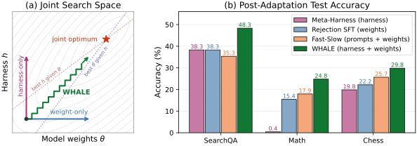
原论文 Figure 1 · 读图： Figure 1(a)把权重θ与执行系统h画成联合目标的两个轴，沿单轴前进会受另一轴限制；(b)对应具体三领域比较，不是任意模型的收敛证明。 回查原图与说明 。图片版权归原作者。冻结更新后的模型，在完整执行代码中搜索 Meta-Harness保存候选代码、任务结果和轨迹。提案agent可查历史档案，编写新候选，在固定的256题harness训练子集上每题采一条轨迹，按均分保留档案中最优。可改提示、工具输入输出格式、反馈、停止和轮数分配；验证器、环境转移规则、参考答案与数据不允许修改。新的harness进入下一轮权重训练，改变下一轮模型所经历的轨迹分布。
切换既不能太勤，也不能拖到过拟合 主配置每轮0.6训练epoch、6次harness搜索。自适应版至少训练0.2 epoch，再看最近0.2 epoch平均奖励在0.2 epoch耐心期内是否进步；harness至少搜索6次，再在2次无新最好训练分时切换。停止只读训练信号，不读验证集。每阶段长度要足以分辨噪声，又要避免对固定另一方优化过度。
部署保留最终模型与harness，不需要在线搜代码 搜索与学习是适配阶段，最终解题仍按所得模型–harness对交互。以搜索题为例，harness可改善查询后处理与返回文档，模型更新改善从证据提取答案；数学题则可能先需要权重学会缩短输出，随后harness调整才变得有效。该闭环并不保证任一阶段收益对另一阶段总是正向。
实验及结果 主结果：比较对象与支持范围 Appendix Table 2报告每题8次采样平均准确率mean@8，非pass@8。SearchQA与Math用Qwen3.5-2B，Chess用4B，温度1.0。Harness-only / Weight-only / prompt限定FST / WHALE的SearchQA均值为38.29 / 38.27 / 35.34 / 48.34，Math为0.42 / 15.42 / 17.92 / 24.79，Chess为19.82 / 22.17 / 25.68 / 29.83。FST使用相同更新算法与调度但只改prompt，支持完整可执行harness搜索比仅提示适配更有表达力。三类单组件基线累计更新预算与联合法对齐。
消融与分析：哪些解释得到支持 §6与Table 3表明交替不是越短越好。SearchQA/Math中长阶段一次性weight→harness只有43.02/15.63，主交替为48.34/24.79；(0.2 epoch,6次搜索)更好，为50.09/28.33。但Math的(0.2,2)噪声导致接受偶然高分harness后训练失稳、提前停止。自适应在SearchQA为52.82，高于最佳手调50.09；Math为26.46，低于最佳手调28.33。Figure 3还显示Math harness-only无法解决输出截断，而小幅权重更新能使后续相同harness搜索有效。
成本、负结果与归因边界 横轴rollout数不含harness提案模型计算，不等于端到端美元成本。结果汇报各运行的最佳测试mean@8点，而非预先锁定单一最终checkpoint，解释时要保留这一选择方式。实验仅2B/4B和三领域，不能推断大模型、任意RL更新算子或无可靠终局验证器时仍有效。首发UTC 8月31日、上海9月1日，归入9月。
总结 核心价值是把模型和执行系统当作耦合对象，并用受控交替解释何时一方成为瓶颈。适用前提是能更新权重、有可信验证器、能限制harness搜索权限；调度影响真实效果，自适应也没有在所有任务上超过最佳手调。
返回本组目录 ↑ · 全部目录 ↑
02 / 27 · 2026-09-01 · 上海首发 · Harness设计与递归改进
HarnessDev HarnessDev: Can LLMs Create and Evolve Their Own Agent Harness?原论文全文 · 版本记录
把能跨任务运行的基础设施本身作为产物，分开测创建、演化和跨模型迁移。
背景介绍 问题与解决思路 方法：从输入到输出 实验及结果 总结 消融与分析 成本与边界 背景介绍 一个模型在固定agent里解题，并不说明它会构建未来任务所需的agent系统。HarnessDev要求模型从弱种子实现可执行harness，再用反馈演化；最终产物是持续复用的程序，而不是一个任务答案。
问题与解决思路 现有榜单混合模型能力与人为工程，且演化中见过的分数容易被当成泛化。本文分开creator、开发环境、executor和评估器，先冻结代码再测；同时设置creator自己执行与统一模型执行，检查改进是否仅适配某个模型。
方法：从输入到输出 弱种子只提供兼容外壳，不赠送解题策略 §3.2的seed能解析输入与模型配置、提供被动文件/搜索/进程/LLM工具并写日志，但没有agent loop、分解、上下文管理、持久状态、验证、恢复或停止规则。其未修改版各基准得零。Creator得到统一规范、权限限制、简短设计说明和1–3个开发案例，补全六类控制机制，不能读取人工harness实现或隐藏评估题。
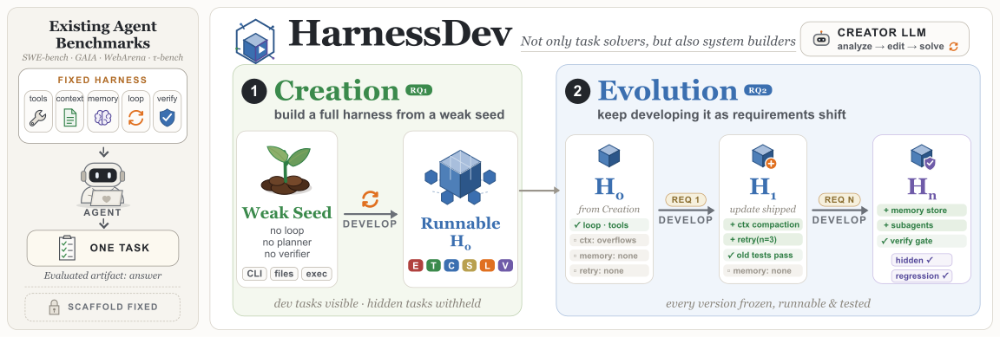
原论文 Figure 1 · 读图： Figure 1区分Creation和Evolution，读图时沿creator→冻结harness→executor→下游评分看，不能把开发过程的反馈集当成独立测试。 回查原图与说明 。图片版权归原作者。创建后冻结，分别测原模型与固定executor Creation覆盖SWE-bench Pro 731、Terminal-Bench 2.1 89、MLE-bench 75、EQ-Bench3 46、BrowseComp 1266题，共2207个独立下游实例。Self-Eval让creator所用模型运行所得harness；Unified-Eval全部绑定Gemini 3.1 Pro。前者量整体系统，后者更接近隔离harness，但不能消除harness与执行器交互。每个creator通常独立创建三个程序，报告avg@3，不是挑最好一次。
演化的反馈集与正式留出测试严格分开 Evolution从各自Creation代码harness开始，向creator开放100题SWE-Pro和全部89题Terminal-Bench反馈。每个提交commit必须完成两套完整评价才进入官方轨迹，最多10个新候选对；之间最多两次固定各5题probe，只作诊断。Creator声明一个完整评价过的非初始commit作为最终版。所有轨迹结束后，才把每个官方版本跑在另630题SWE-Pro，分数从不反馈给creator。
以真实状态评分，开发成本与部署成本分账 SWE评分只读真实repository diff，Terminal只读最终环境状态，不接受harness自报成功。禁止按题ID硬编码、读隐藏测试或绕过统一模型接口，源码与执行记录供事后审计。模型权重不训练；开发的token不计入执行效率栏，后者只统计冻结harness运行下游任务消耗的executor token。因此创建能力和总开发经济性仍是两个问题。
实验及结果 主结果：比较对象与支持范围 Table 3 Self-Eval中Opus 4.8创建的harness，SWE-Pro 69.3、Terminal 64.8、MLE medal 32.9、EQ-Bench3 84.6、BrowseComp 52.4。人工参考行对应80.0、88.8、24.0、83.7、92.2，但使用不同模型，且带星SWE/Terminal/BrowseComp为未重跑的外部结果，不能说单独harness因素造成差距。Table 4统一Gemini后Opus harness的SWE为33.0（含一个崩溃副本），而Gemini自己创建的为43.6；这说明自执行成绩不能直接代表可迁移harness质量。
消融与分析：哪些解释得到支持 Table 6把演化反馈与留出表现对齐。Self-Gemini反馈均分59.9→68.7，留出630题48.89→51.59；Self-Qwen反馈41.8→55.7，留出仅42.22→43.65。固定Gemini执行GPT-5.5所演化harness时，反馈56.6→59.1，却留出42.22→31.90，下降10.32点。其最终版距该谱系曾出现的最佳留出成绩差16.51点，说明选择与回归控制本身就是瓶颈。这是反馈泛化和executor敏感性的分析，不是逐个组件消融。
成本、负结果与归因边界 Evolution每creator–runtime单元只有一条轨迹，另有一个主runtime未完成，不能给总体不确定性估计；留出评估只覆盖SWE-Pro。Creation崩溃副本保留在主均值，删去后的“干净”结果只是事后敏感性，不能替代主榜。主Avg排除MLE，四种不同原生指标简单平均也不等价统一成功率。人工参考不同预算、不同模型，效率表也不含开发成本。
总结 HarnessDev的贡献是让“会用agent”与“会开发agent”成为可区分的能力，并把反馈集进步、留出泛化、跨executor可用性拆开。它揭示有用局部改进已经出现，但自动演化稳定性和最终版本选择仍不足，不能因训练曲线变好就称持续通用自改进。
返回本组目录 ↑ · 全部目录 ↑
03 / 27 · 2026-09-03 · 上海首发 · Harness设计与递归改进
EvoHarnessBench EVOHARNESSBENCH: Can Your Agents Keep Pace with an Evolving Harness?原论文全文 · 版本记录
工具和技能越来越多，权重不变的agent也会忘记怎样完成旧任务。
背景介绍 问题与解决思路 方法：从输入到输出 实验及结果 总结 消融与分析 成本与边界 背景介绍 持续学习通常把变化放在任务或模型里，但部署时外部harness本身也在变：新工具、技能与专家加入，旧记忆和委派习惯可能不再适合。EvoHarnessBench把这层变化单独控制，评估增加能力表面后能否保住旧表现。
问题与解决思路 新能力缺失造成失败与新能力存在却让旧流程变坏，是两个问题。基准保持每个任务输入和目标不变，只逐步扩大外部能力池；同时区分每阶段全新agent与能携带经验的agent，避免把harness干扰误写成权重灾难性遗忘。
方法：从输入到输出 按能力释放而非随机排任务 §3从EOG企业工具任务与ALE抽取能力需求集合，按出现频率从常用核心到长尾分3–6阶段释放。任务分配到其全部需求首次可用的阶段，并必须至少需要一个本阶段新增能力。总17条stream、802唯一任务、1510轴特定实例、520工具、42参考技能、62专家；这些不是1510互不重复任务。
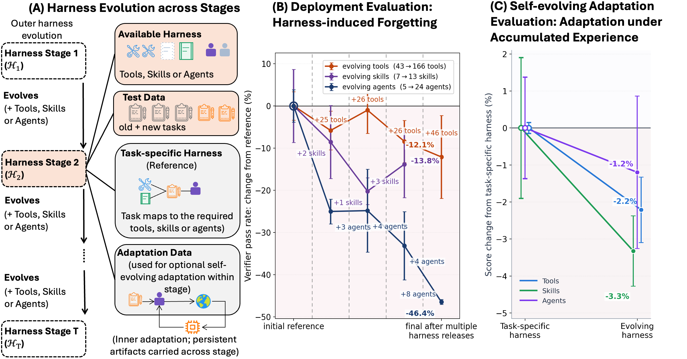
原论文 Figure 1 · 读图： Figure 1(A)外层逐步扩大同一能力池，内层可选地更新持久状态；每阶段同时回测旧cohort与新cohort。图(B)(C)是特定遗忘/适应指标，不等于所有主表总Pass都下降。 回查原图与说明 。图片版权归原作者。三条轴有不同可观测与构造偏差 工具需求继承原基准oracle注释；技能从system prompt规则式剥离程序步骤，保留一般指令，再按verifier所查对象关键词匹配任务。技能匹配只是相关性的代理，不保证必要/充分/唯一。专家按工具所操作实体分组，主agent无直接工具，必须委派给有相应权限与程序背景的专家。每条轴独立增长，不同时改变所有三种能力。
技能必须实际读取，不能把可用当作采用 技能池可检索但不直接注入prompt，原程序内容也已从prompt去掉；因而考验找并使用技能，而不只是多了上下文。工具直接增加schema选择面，专家扩展delegation池，两者干扰形式与技能不同。task-specific reference只暴露注释中需要的能力，是oracle缩窄对照而不是现实默认配置。
分别记录新任务适应与旧任务保留 deployment每阶段创建全新系统，无经验跨阶段，测当前及所有旧cohort；adaptation则在累计adapt split更新记忆、prompt或可执行harness，带到后续阶段，eval split不作更新。性能矩阵行是harness阶段、列是任务cohort：BWT看旧cohort最终相对引入时变化，FWT看当阶段适应前后新cohort变化。指标为相对转移，不能等同总Pass的绝对百分点。
测持久状态的多种形式，而非假设所有记忆有益 主比较固定GPT-5底座，含ReAct/Codex、AutoGen/DeLM，以及Raw Memory、ReasoningBank、MemToolAgent、GEPA和Meta-Harness；Claude Code不同模型单列附录，不直接控制比较。另控制adaptation只给task-specific能力，或从开始就给最终全池，区分宽度压力和阶段变化压力。权重全程不变。
实验及结果 主结果：比较对象与支持范围 9月v3 Table 2显示工具扩展并非总降分：EOG任务特定26.0±.6%→累计30.2±.8%，token27.2M→75.8M；ALE11.6±1.5→12.2±.7%，token82.2M→100.8M。MemToolAgent令EOG30.2→38.6，却ALE12.2→10.1，经验收益依赖环境。Table 4技能扩展EOG18.9→18.9，几乎无总效应；GEPA适应到24.1，ALE却仍7.4低于无适应8.3。Table 6专家池扩展EOG6.5→8.8、ALE5.3→4.2；Meta-Harness EOG18.5但ALE3.2。必须同时保留新题总分与旧题遗忘，不能只引用摘要“扩展一定掉分”。
消融与分析：哪些解释得到支持 Table 3工具adaptation给精简池，最终仍测全池，MemToolAgent38.6→39.1%，时间23.9→17.9h；从始至终全池则37.9/28.6h。Table 7专家稳定全池反而18.5→20.3，说明这里阶段非平稳比池大更关键。Appendix J.2技能生成无技能16.9%、一次生成11.5%、单条自反馈12.8%、原轨迹20.0%、批量老师反馈22.1，粗糙自生技能可以更差；同经验联合学23.6高于逐阶段22.1。Figure 7 EOG委派precision约90%，recall79→最高89，改善主要是找齐专家而非排除无关者；旧题忘记常因为不再调用原来必需的专家，不是单纯调用新增无关专家。
成本、负结果与归因边界 技能调用率的分母是各臂自身提供的库；Claude Code统计文件读取而非独立技能，且名字未记录，不能把GPT5.5的82%与其15%当完全同指标排名。关键词技能需求只近似、只研究累积新增不测删改能力、stream先常用后长尾，与真实部署分布可能不同。主结果时间/token为具体评测运行，部分多agent条件在相当预算无法完成，空格不是零分。BWT/FWT与总准确率可能相反，保住旧题不保证学会新工具。
总结 它补上了RSI评测的一条重要轴：新能力交付后，agent还要学会使用它，又不能破坏旧工作方式。结论不是“少装工具”或“记忆无效”，而是应分别测能力暴露、真实使用、全流程完成、新题适应和旧题保留，尤其警惕把总均分掩盖的委派缺失当作能力增长。
返回本组目录 ↑ · 全部目录 ↑
04 / 27 · 2026-09-14 · 上海首发 · Harness设计与递归改进
ModularRSI ModularRSI: Modular and Generalizable Recursive Harness Self-Improvement原论文全文 · 版本记录
模块隔离让“修改哪里”成为可控变量，轨迹对照和验证门限制短视补丁。
背景介绍 问题与解决思路 方法：从输入到输出 实验及结果 总结 消融与分析 成本与边界 背景介绍 面对终端或代码修改任务，模型会读错观察、重复工具调用、丢失上下文或过早结束。本文不重新训练语言模型，而是让执行智能体根据运行轨迹修改其外围执行代码，并检验改进能否跨任务集与模型迁移。
问题与解决思路 一次允许任意修改整个 harness，容易让不同修复互相冲突；单个失败也可能诱导硬编码答案。作者将搜索分解成五个独立功能谱系，用同任务成功与失败轨迹对照定位问题，经过校验后再整合，而不是在同一代码库无约束累积补丁。
方法：从输入到输出 把可演化部分划成五个边界 §3.2 在 Harbor 的 Terminus-2 基础上划分 Agent Loop、Observation Management、Tool Use、Context Management 和 Task Completion Detection。它们分别控制行动循环、观察过滤、工具调用、历史保留及完成判断。沙箱初始化、并行执行、模型通信等基础设施不在演化范围。五条谱系从同一个初始系统开始，各自只能修改指定模块，中途不共享更新。
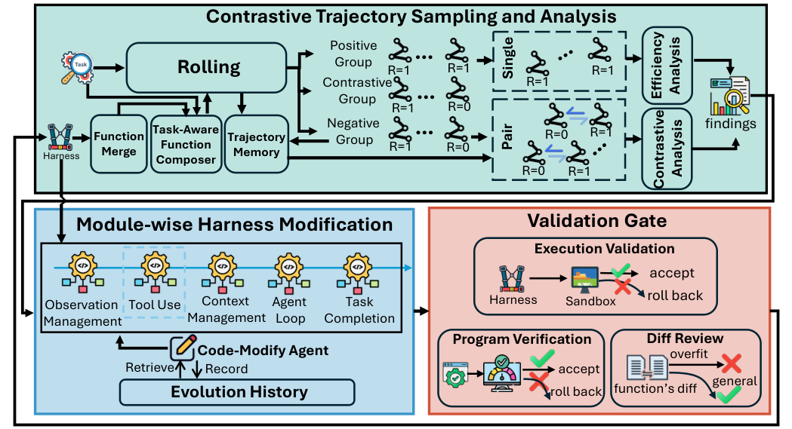
原论文 Figure 1 · 读图： 上部把同任务正负轨迹连接到功能诊断，下部五个模块各自修改，再经过程序、diff和执行验证。读图时区分“发现问题”和“允许补丁进入库”两条路径，后者才限制错误累积。 回查原图与说明 。图片版权归原作者。从轨迹找反复出现的功能缺陷 每个任务采样 K 条轨迹，用任务验证器的二元成功奖励分成全成功、成功失败混合、全失败三组。混合组在同任务内比较行为差异；全失败组优先从轨迹记忆找历史成功，没有时只能分析明显运行缺陷；全成功组仍可找效率改进。诊断写成含证据、理由、目标函数的结构化记录。同函数的相似诊断合并，按提供支持的独立任务数投票，每批优先处理排名靠前的候选，减少偶然个案左右搜索。
代码修改必须经过三道门 §3.5 先检查导入和协议兼容性，再审阅 diff 是否包含任务特定答案、不可泛化条件，最后随机取当前批两个任务运行，检查执行错误和协议违规。任一门失败即按 diff 回滚。这里的监督是可执行结果与代码审阅，不是梯度目标；被优化的是模块函数和描述，基础语言模型参数保持不变。两任务检查是轻量门槛，不等于完整泛化证明。
整合与按任务组合是两个阶段 独立模块演化结束后再做一个整合 epoch，通过集成系统的新轨迹消除重复职责和冲突。Function Merge 合并相似函数，Task-Aware Function Composer 按任务和函数描述选择子集。9月v1写明整合后最终库冻结，但也把merge与composition共同描述为用于轨迹采集及下游，因此不据此断言下游每个内部步骤都严格无变更。本文按9月版本记录，不借用10月修订澄清来强化结论。
实验及结果 主结果：比较对象与支持范围 Table 2：DeepSeek-V4-Flash 的无演化 TerminalBench 2.0 Acc 为 47.57，TB 相关任务演化后为 52.43；同一产物迁移到 SWE-Bench-Verified，从 73.40 到 75.80。反向在 SWE 相关任务演化，SWE 达 76.45，跨域 TB 为 49.40。Table 3 也报告不同推理模型：GLM-5.2 为 59.55→61.80，MiniMax-2.5 为 41.57→44.94。由此可说本次固定库具备一定跨域、跨模型可用性，不能说模块划分在所有执行框架都最优。
消融与分析：哪些解释得到支持 v1 Table 4控制任务与执行模型，非模块演化、所有模块联合演化、独立演化后整合的Acc为46.44、44.19、52.43，无演化47.57，说明允许改更多地方不保证更好。Table 5观察管理单模块平均步数22.50，完整系统35.57，无演化34.70，整合追求成功率并非自动最省步数。9月版本没有分别移除轨迹分析、函数库管理和验证门的消融，不能借10月v2新增表格补足本月因果结论。Table 6另一组比较基线61.79、Meta62.92、AHE62.54、本文67.42，实验设置不同，不与主表拼接。
成本、负结果与归因边界 搜索需要多轨迹执行、代码审阅和额外验证；下游又有函数选择调用。文中的 StepNum 是平均交互步数，不是完整演化 token 成本或墙钟耗时。Pass@3 与三次均成功的 Pass³ 也不可混读。
总结 模块隔离让“修改哪里”成为可控变量，轨迹对照和验证门限制短视补丁。但跨域提升仍受初始框架、验证器与函数边界约束；应把它视为有外部验证的代码级自我改进，而不是模型自行无限递归变强。
返回本组目录 ↑ · 全部目录 ↑
05 / 27 · 2026-09-14 · 上海首发 · Harness设计与递归改进
Dream-RSI Dream-RSI: Recursive Self-Improvement through Evolving Worlds原论文全文 · 版本记录
把历史搜索树变成可重放的试验场，先试探索策略，再付真实发现成本。
背景介绍 问题与解决思路 方法：从输入到输出 实验及结果 总结 消融与分析 成本与边界 背景介绍 科学发现智能体需要反复生成算法、检查正确性并测量性能。即使模型不变，选哪个候选继续改、开几条并行分支、何时停止，也决定同样预算能找到什么。本文优化的是这层可执行探索策略，而不是训练一个预测物理世界的视频模型。
问题与解决思路 固定搜索策略不适应不断变化的搜索空间；直接在线比较新策略，又得为每个策略付一整段长程搜索成本。Dream-RSI把已经发生过的发现过程保存为树，允许新策略在旧树上重新安排观察顺序、分支与停止时机，用廉价回放筛选，再回到真实环境采集下一棵树。
方法：从输入到输出 在线阶段保留完整尝试，而不是只存一句成功经验 §3中根节点是初始工作区，每个后继保存生成产物、文件系统快照、评价诊断和分数。策略每次从根与当前叶节点选择不超过W个起点，固定的coding agent从对应快照继续生成，固定验证器检查结果。根始终可选，用于打开新分支；空批次或轮数上限终止。本轮策略不边执行边改代码，历史树与本轮新树分开。
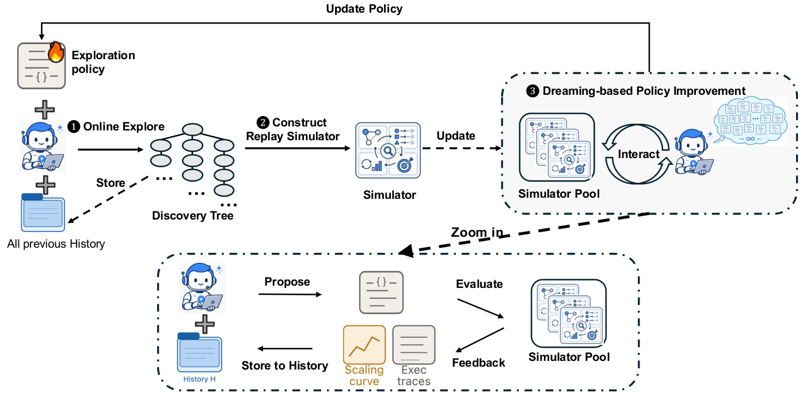
原论文 Figure 1 · 读图： Figure 1先看在线发现树如何进入Replay Simulator，再看离线改的是探索策略代码；最后的回箭头才产生新证据，底层coding agent并未更新权重。 回查原图与说明 。图片版权归原作者。离线世界只能重放已有结果 回放对每个候选策略重置状态，从只看见根开始。选择非根节点时揭示它已有的下一条记录；选根时打开尚未见过的最早分支。没有记录的延续返回空集，不会凭空模拟一种新算法的效果。策略只能使用已揭示的前缀，因此不是提前偷看整树再挑最高分；它可改变继续哪条分支、并发分组、停止决策，却不能改变历史分支上的父子顺序。
以质量、调用数和并发效率共同筛选策略 回放目标取所见最佳解质量，减去已揭示的生成尝试数惩罚，再奖励每决策轮平均调度的尝试数。这里计数是历史所代表的在线工作量，不是回放实际重新调用模型。固定的策略开发agent读取各历史世界的回放轨迹和分数，改写探索策略代码，再用同一批历史评价；选平均分最高的已评价版本，候选包括原策略，所以仅能保证固定历史上的回放分不退步。
把离线改动带回真实生成，闭环才完成 胜出策略用于下一轮真实搜索，真实生成仍有随机性，新树加入世界池后再改策略。底层模型、评分器和接口全程冻结，没有神经网络权重训练。例如旧树记录某分支连续几次无进展，新策略可学会提前停下并打开另一分支；但它能否在未出现过的搜索结果上也有效，必须由后续在线评价检验。
实验及结果 主结果：比较对象与支持范围 Figure 3(a)在Lasso路径求解的17个合成发现实例上搜索、六个留出数据集测运行时间。同为Gemini-3.1 Pro，固定探索用550次发现调用，平均运行时间3587.1 ms；Dream-RSI用317次，得到2931.0 ms。Flash对应3200→1879次、2516.7→2350.6 ms。Table 1的数学任务并非全面胜出：Sum–Difference为1.145427，高于固定策略1.144047；Circle Packing同为2.635983；Autocorrelation越低越好，Dream-RSI为1.456375，反而略差于固定策略1.456001，也差于SimpleTES的1.453675。后者使用51200次生成，不能据分数直接排同预算排名。
消融与分析：哪些解释得到支持 §5.1/Figure 5在ConvDiv、相同发现预算下，把历史总结成方向提示加入固定探索或Dream-RSI，两个有提示条件均劣于各自无提示条件，支持“历史作为可交互决策试验场”不同于“把过去经验写进prompt”，但不能推广为一切自然语言记忆都有害。Figure 6中各轮最佳逆延迟从0.427上升到1.898 (1/ms)，尝试数不是单调减少，而是110、110、87、80、50、92、80、91、86，表明策略会在停滞后重新增加探索。
成本、负结果与归因边界 主要成本横轴是累计发现agent调用数，不能当成包括策略开发、模型价格差异和全部计算在内的端到端费用。历史回放不产生新候选，但改策略的LLM调用仍有成本；历史覆盖有限、在线转移随机，使回放单调性不等于未来性能保证。9月采用v1，不引入10月v2。
总结 值得借鉴的是将高成本探索留下的完整结构化轨迹，变成探索控制器的离线测试集。它适合分支过程和评价结果可复现记录的发现任务；效果取决于历史是否覆盖未来需要的决策，且数学负结果提醒“更省调用”与“最佳最终解”要分别判断。
返回本组目录 ↑ · 全部目录 ↑
06 / 27 · 2026-09-17 · 上海首发 · Harness设计与递归改进
SoL-Pi SoL-Pi: Recursively Scaling Auto-Research Loops for Efficient Agent Harness原论文全文 · 版本记录
用有能力约束的自动研究筛选四种省token机制，同时保留真实能力损失。
背景介绍 问题与解决思路 方法：从输入到输出 实验及结果 总结 消融与分析 成本与边界 背景介绍 长程coding agent的费用不只来自输出答案，还来自反复发送历史、冗长日志、编辑后再发一轮测试，以及压缩后重建缓存。SoL-Pi研究固定模型下，自动改harness能否少做这些重复工作，而不是靠降低模型规格来省钱。
问题与解决思路 局部压缩看似省token，可能破坏后续证据或把成本推迟。作者把搜索组织成多个隔离研究支线，先保证事先约定的能力指标在容差内，再要求至少一个效率指标改善，保留多指标非支配候选，最后集成四个机制。
方法：从输入到输出 搜索反馈与最终验证隔离 §2从152个方向、六类假设开始，研究agent读取基础Pi轨迹找重复开销。535个开发环境包含495个issue/PR构成的仓库任务和40个可执行verifier任务；真实补丁、回归测试对agent隐藏，测试须满足补丁前失败、补丁后通过。独立实现者反复改代码，独立审查后才评测，失败支线单独终止。每个支线复制研究模板，产物与证据保留，修改过的研究编排代码丢弃。模型权重不训练。
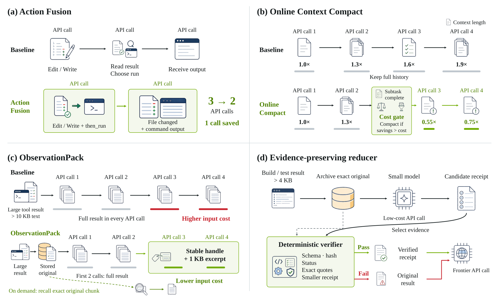
原论文 Figure 4 · 读图： Figure 4按执行顺序看：合并编辑与命令、输出进入证据压缩/句柄归档、计划完成触发上下文压缩；红色分支是费用超额或验证失败时保留原行为的边界。 回查原图与说明 。图片版权归原作者。Action Fusion减少一次不必要的交互 把改文件与可预先确定的后续测试/构建命令放入同一次工具请求，返回两部分结果。原来需要模型在中间再决定“执行刚才已知要做的命令”，现在不需要；若后续动作必须先看编辑结果，就保持分离。Figure 8记录27次开发迭代，单靠prompt的触发不稳，于是扩展工具schema形成明确接口，而非仅要求模型多批处理。
压缩按计划进度和缓存账单触发 Online Context Compact在计划步骤完成时估计剩余请求数，由已完成步骤的请求频率与剩余步骤推得，并以当前增长速度到上下文上限的请求数封顶。预计重复输入节省超过缓存改写成本才调用Pi原生压缩，后续压缩还考虑未回收成本与更高门槛。接近窗口上限可强制触发；这只是启发式成本门，未单独计价摘要调用。
大观察先完整曝光，再用可回读句柄替代 ObservationPack将>10KiB工具输出保存在本地，后续两次provider请求仍发全文，从第三次开始改为稳定句柄、原大小及约1KB首尾完整行。需要细节时可按页取回原文，小输出不动。这不同于永久删除中间日志，关键是减少每轮重复传输同时保留精确回查。
低价模型提取日志，确定性验证兜底 Evidence-Preserving Reducer仅处理预定义命令≥4KiB的构建/测试日志，文件读取和搜索跳过。GPT-5.6 Luna抽取紧凑receipt，程序核对schema、源hash、退出状态、精确引文与大小；失败、疑似凭据或没有缩短则退回原日志。Reducer先于ObservationPack，后者识别receipt避免重复压缩；主agent仍负责诊断，不把辅助摘要当作已验证结论。
冻结后的接受与测试仍要分清 机制代码、配置、指标、容差和接受规则在EdgeBench前冻结，51个公开任务中11个只作单向接受，40个最终评价泛化；失败验证不再返工。论文总表使用51题公开集，因此汇总并非纯40题最终子集。Efficiency固定四机制；Performance则是每个后端在单机制结果中挑最高分的配置，不能当成事前固定、无选择偏差的新系统。
实验及结果 主结果：比较对象与支持范围 Table 1/2，GPT-5.6 Sol下Pi→四机制Efficiency：平均分44.833→42.003，记录token流量2.1538B→1.0990B，API费$1339→$894。Opus 5无再搜索迁移：44.756→42.224，2.3697B→1.3101B，$1741→$1158。约一半token与三分之一费用节省伴随约6%分数下降，不是无损加速。Table 3，Terminal-Bench 4的63个CPU题Pi解决18题、$286.45，SoL-Pi解决15题、$211.12，每解决题$15.91→$14.07；IMO六题均用GPT-5.6 Sol xhigh、每题150分钟，Pi与SoL-Pi均过3题，$75.95→$62.69，Codex则5题/$114.47。
消融与分析：哪些解释得到支持 Table 4为add-one而非逐一删除：GPT单加ObservationPack分数47.208、$1271，胜完整栈分数42.003但费用更高；单加在线压缩41.993/$935。Opus单加Action Fusion为50.482/$1605，而完整栈42.224/$1158。各机制触发子集不同，Figure 7所称组合互补只是描述，未隔离交互因果。两小时kernel优化每种配置仅一条运行：20个SoL-Pi worker群得到1127 cycles/$60.11，Pi群1366/$82.12，单agent1333/$39.20；群体更快不意味着比单体便宜，也不能从单次轨迹断言普遍优势。
成本、负结果与归因边界 API费按2026-08-17固定价格计算，token包含cache-read/write，不同provider缓存策略会改变收益。完整GPT栈cache-read从2.1326B降到1.0605B，cache-write却0.0141B升到0.0316B，不能只看缓存命中率。研究搜索本身昂贵，论文没有固定预算下宽度/深度缩放对照，也未展示用SoL-Pi研究下一代带来的复利；recursive efficient improvement是未来方向，不是已验证加速定律。
总结 可迁移经验是把省钱动作放在明确执行边界，并给被压缩证据保留回查与失败兜底。实验支持一个成本与能力的可选折中，不能把“保持在容差内”改写成“性能完全不降”，更不能把一次自动搜索直接叫作持续递归能力爆发。
返回本组目录 ↑ · 全部目录 ↑
07 / 27 · 2026-09-18 · 上海首发 · Harness设计与递归改进
Harness条件效应 An Empirical Study of Harness Design for Coding Agents原论文全文 · 版本记录
不是harness越复杂越好：模型、任务和窗口预算决定规划、工具与记忆何时值得加。
背景介绍 问题与解决思路 方法：从输入到输出 实验及结果 总结 消融与分析 成本与边界 背景介绍 coding benchmark测的是模型与外部执行系统的组合，单看解决率无法知道进步来自模型还是工具、规划和上下文。论文搭建可分开配置的轻量ReAct harness，跨四模型和两类长程coding任务检验这些组件的条件效应。
问题与解决思路 作者不提出一个通吃配置，而是问：上下文管理是在改善推理，还是仅防止提前溢出？规划让弱模型继续做，还是让强模型少做重复验证？结构化工具何时帮忙、何时增加动作开销？实验把这些问题拆成可对照的接口改动。
方法：从输入到输出 固定执行底座，明确干预范围 每轮装配模型输入、执行容器工具、追加观察；300步上限、每轮输出16384token、工具输出截24k字符、最多八个只读工具并行。四模型BF16本地SGLang，temperature=0，top-p=.95。路径/权限门、编辑后ruff等诊断与卡住检测作为底座；连续五次相同动作提醒、八次相同失败终止。实验没有模型训练。
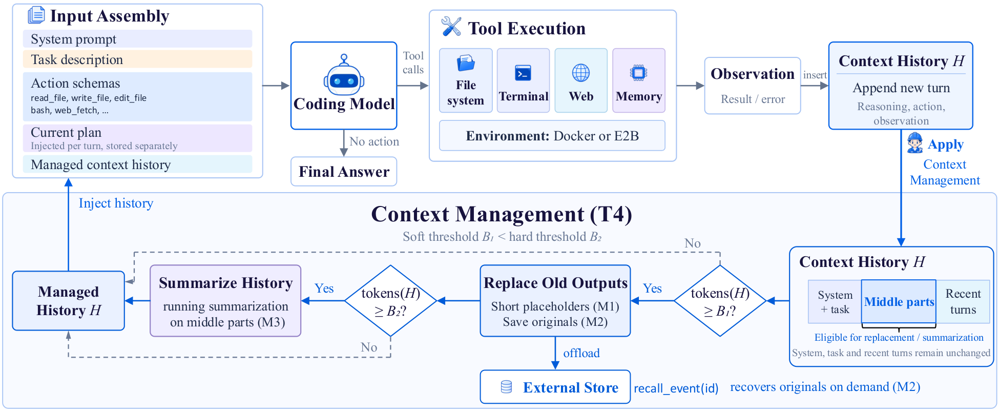
原论文 Figure 2 · 读图： Figure 2上方区分持续计划、工具schema、历史表示三处干预；下方T4先在软阈值移走大输出，再于硬阈值摘要，系统开头与最近轮次保持原文。 回查原图与说明 。图片版权归原作者。规划是持续注入的显式状态，不是泛指思考 开启时system指令与首轮提醒要求update_plan，后续将当前计划额外注入模型输入但不重复写进历史。关闭同时去掉说明、提醒、注入和工具。因而测的是这个持久计划支架，不能据此断言语言模型是否需要内部规划。
动作空间干预是一揽子接口变化 完整接口提供文件读写编辑、搜索、网页读取和bash，去掉web search以免直接查到SWE原PR。bash-only只移除工作区专用工具，仍保留所开规划/记忆工具；还同时改变read-before-write、文件状态追踪和自动诊断路径。因此结果不是单独“工具数量”或“动作粒度”的纯因果。
上下文五档将丢弃、回读和摘要拆开 T0不管理，溢出直接失败；T1将旧工具正文换短stub；T2在此基础上外存原文，可recall_event精确回读；T3只摘要；T4全开。T4超窗口60%先消除中部大输出，超85%再调用同一模型的无工具摘要；系统/原任务与预算30%、至少两轮最近历史保留原文。T1–T3单策略均在85%阈值运行，所以T4也包含更早触发的差别。
先扫窗口，再做局部组件对照 32/64/96/128k × 五档 × 四模型 × 两基准为160格，再仅在T4/128k分别关闭规划或换bash-only，合计176设置。SWE-bench Verified500题、Terminal-Bench2.1 89题，每题每设置一次。用任务配对的精确McNemar检验，并在比较族内Benjamini–Hochberg校正q<.05；轨迹另由GPT-5.5标阶段，200条轨迹15610单元人工抽验约94.2%一致，κ约.929。
实验及结果 主结果：比较对象与支持范围 Table 3/4与Figure 3：上下文管理相对T0的四模型平均成功率增益，SWE从32k的35.7个百分点缩到128k的2.7点，Terminal从9.5缩到2.8点；T0平均溢出率分别78.7%→8.7%、61.0%→12.1%，管理各档全为0。具体如Nemotron-550B SWE 32k T0为6.4%/$0.26每题，T4为55.6%/$1.45；128k为59.8%/$2.08与65.8%/$2.33。避免提前失败常会增加花费，低成本的T0不能误认为高效率。
消融与分析：哪些解释得到支持 规划/动作对照才是关键分析：128k/T4 Nemotron30B在SWE无计划13.6%/$0.02，有计划25.2%/$0.09；550B无计划67.8%/$3.31，有计划65.8%/$2.33，变成少花钱但略降正确率。Table 6显示30B无编辑终止68.6%→27.8%，而550B计划使中位轮数108→74，主要少做后期验证。换bash-only，550B SWE65.8%→69.4%、$2.33→$1.11；Mistral却68.6%→45.4%，在Terminal又37.08%→43.82%。不能把“强模型只需shell”跨任务套用。Appendix Table13中强模型recall调用几乎为0，不能将T2/T4成绩一概归功主动回忆。
成本、负结果与归因边界 T4在跨窗口平均的八个模型×任务面板中七个费用最低，但不总是准确率最高。工具操作日志说明550B可用更大的shell步骤减少重复补丁，30B却常发出不在bash-only registry内的工具，Terminal66%轨迹因此终止，差异也来自训练接口熟悉度。规划/工具仅在一个上下文配置消融，非全因子；Terminal只有89题，很多方向未显著。费用套用2026-08 OpenRouter单价，是统一估价而非本地GPU真实成本，外推别的模型家族与非Python工作需重新验证。
总结 这篇应作为harness设计的条件地图：先查失败来自窗口耗尽、过早停止、过度验证还是工具接口不匹配，再选组件。完整组合不是默认最优；可恢复存储也只有模型真的调用它，才是有效记忆。
返回本组目录 ↑ · 全部目录 ↑
08 / 27 · 2026-09-22 · 上海首发 · Harness设计与递归改进
RRSI RRSI: Regularized Recursive Self-Improvement of Agent Harnesses原论文全文 · 版本记录
可靠自我改进需要保留“未采用的假设”和控制接受条件，而不只是保存成功补丁。
背景介绍 问题与解决思路 方法：从输入到输出 实验及结果 总结 消融与分析 成本与边界 背景介绍 智能体反复在有限任务集上评测并修改自己的 harness，很容易把评分细节、随机好运或更多推理预算当成能力提升。本文把研究重点从“演化集涨多少”移到“改完的程序能否不变地迁到未见任务”，基础模型始终冻结。
问题与解决思路 单纯选最高分候选会不断适应同一批反馈。RRSI 不禁止某类 harness 修改，而是同时约束提案和接受：每轮少改几个可归因机制、记住失败证据、拒绝泄漏和不划算的复杂度增长。名称中的 L0/L1/L2 是离散程序搜索的类比，不是对神经网络权重施加三种正则损失。
方法：从输入到输出 先测波动，再提出稀疏更新 §3.2 通过余弦日程将每轮可同时修改的独立机制数从较大预算退火到较小预算，前期探索、后期便于归因。每个候选保存目标组件、待检验假设、代码 diff、分数与成本变化、接受结果；拒绝的改动也成为后续负证据。若最近若干轮进展在经验噪声带内，则把小部分提案预算分给尚未探索的组件，避免只会反复改提示。
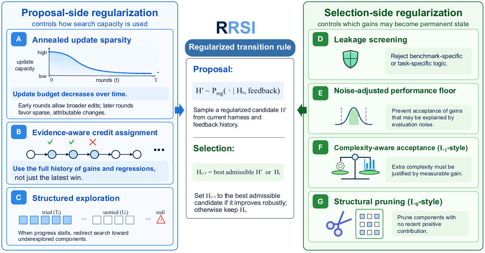
原论文 Figure 2 · 读图： 左侧三类提案约束减少无根据的搜索，右侧四类选择约束决定改动能否成为永久状态。中心转移规则不是每次生成补丁都采用；失败或不稳定时保留旧harness。 回查原图与说明 。图片版权归原作者。候选不能先靠泄漏拿高分 完整评测前，critic 检查 diff 中是否硬编码任务名称、实体、答案、特定数值或无作用结构。通过后才运行演化集。系统在演化前重复测不变的初始 harness，估计噪声带 δ；任何候选须高于历来最好分数减 δ 的底线，避免一连串“每次只跌一点”的累计退化。
新增计算必须以收益解释 §3.3 用相对 policy-token 增幅衡量复杂度。对分数提升大于噪声带的候选，允许成本增幅不得超过由基础容忍项和收益线性项构成的门槛；噪声带内的候选另按 Appendix D.3 处理。持续没有正收益的组件被提出为删除对象。这不是固定总 token 最优化，也不保证产物比初始系统更便宜。
训练与部署分离在程序层 提案者、跨轮分析者、critic 与执行 policy 使用 Claude Opus 4.8，模型不做梯度更新；优化对象包括提示、控制流、工具、上下文、记忆和子智能体代码。编码域从 Terminus-2 出发，在 Terminal-Bench 2.1 演化；工作域在 Harvey LAB 的 120 任务演化，40 个 ID 任务保留不参与搜索；工程设计由固定模拟器评分。最终 harness 在 OOD 集原样运行，避免把测试反馈再次带回修改。
实验及结果 主结果：比较对象与支持范围 Table 1 固定初始 harness、冻结 policy、演化任务与候选预算。RRSI 的 Harvey LAB 演化/ID 分数为 90.5/89.2，基线为 89.4/86.9；JobBench/GDPval/APEX-Agents 从 36.0/48.8/34.2 到 40.7/52.3/37.9。Meta-Harness 演化分最高 93.0，但三个 OOD 为 37.1/49.1/35.7，说明演化集排序不能直接当泛化排序。Figure 3/Table 3 编码域 Terminal-Bench 74.2→80.2，SWE-bench Verified 82.0→83.8；工程 Frontier-Eng 17.7→22.0，评价由模拟器或测试台而非同一 LLM judge 完成。
消融与分析：哪些解释得到支持 Table 2 以工作域固定实验控制消融：完整 RRSI 的 OOD 平均 43.6、tokens/trial 2.42M；不加任何正则为 40.3/3.80M，去提案约束为 41.9/2.69M，去接受约束为 41.0/3.59M。无正则演化分达 92.8，却更差地迁移，支持正则抑制自适应过拟合的解释；但各组约束是组合移除，无法辨别每条规则的独立效应。
成本、负结果与归因边界 接受门还检查修改引起的运行成本增量，附录C.3按允许的评分增益设定成本预算。统计独立重复与bootstrap补充属于10月后续版本，本月仅据9月v2已有结果，不倒灌后续证据。搜索需多次任务执行与提案模型调用，拒绝补丁也有成本；受控回归测试不等于开放世界安全保证。 初始harness为1.56M tokens/trial、21.2步，RRSI为2.42M、26.3步，相对其它演化法更省但比不演化更贵。
总结 可靠自我改进需要保留“未采用的假设”和控制接受条件，而不只是保存成功补丁。RRSI 的强项是以冻结系统跨域测试验证泛化；结论仍限于已有基准和模型，不能把有限轮程序搜索当作无界递归智能增长。
返回本组目录 ↑ · 全部目录 ↑
09 / 27 · 2026-09-22 · 上海首发 · Harness设计与递归改进
AIDE² Recursive self-improvement of AI research agents原论文全文 · 版本记录
让研究智能体改写研究智能体，以隐藏评价和固定预算筛选可迁移改进。
背景介绍 问题与解决思路 方法：从输入到输出 实验及结果 总结 消融与分析 成本与边界 背景介绍 现有自动研究系统已经能改训练代码、内核和算法，但驱动这些改进的搜索流程多由人手写。AIDE²把研究agent自身代码当作优化对象：输入是agent实现与任务评价，输出是能在相同研究预算下找到更好程序的新agent。
问题与解决思路 单次有利补丁不等于持续自改进，选择任务上的进步也不等于泛化。作者构造内外两层代码搜索，内层优化具体任务产物，外层改内层agent；通过私有评分和外部留出基准分开检验“能被选择”“能迁移”以及“是否更会推动下一轮自改进”。
方法：从输入到输出 内层搜索的对象是解题代码 §2中简化AIDE₀保留draft、debug、improve三种操作和搜索树，初始规则贪心选择最高分候选继续改。每个任务有固定美元预算，覆盖模型token与候选执行；agent看到公开反馈，最后自行挑一个产物返回。选父节点、记忆压缩、最终选解规则都属于可被外层改写的代码。
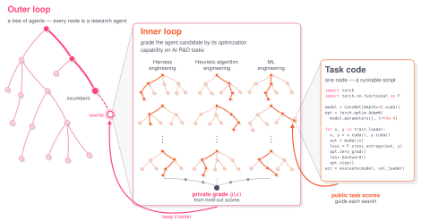
原论文 Figure 1 · 读图： Figure 1区分外层改agent和内层改任务代码，两层分别看到的评分不同；留意私有评价只决定外层接受，模型权重不在改写范围。 回查原图与说明 。图片版权归原作者。外层改实现，用私有任务结果作接受门 固定的AIDE_human读取已有候选agent和评分，改当前incumbent。每个新agent在机器学习、启发式算法、harness工程三类选择任务上按固定预算运行，其产物在内层不可见的私有数据上评分并聚合为g(a)。仅优于历史最佳才替换incumbent，接受的代码成为下一次编辑对象。内层公共反馈与外层私有分离降低直接钻评分漏洞的机会，但外层仍然能适应反复使用的选择套件。
实际演化得到搜索与记忆机制，而非新模型权重 §3.5的AIDE₈₅把候选按五种起草策略分组，用UCB1选策略，30%步骤改用各策略最佳分的softmax；每五步把当前最佳解转到另一策略继续改，以免局部细修停滞又丢掉好解。prompt只保留根与近期候选摘要；当bug比例≥15%，加入最多三类去重错误末行作为失败记忆。内层模型固定gemini 3 flash，外层固定claude opus 4.7，变化发生在harness代码。
将候选质量与自改进能力分开验证 先在四个完全未参与选择的基准比较AIDE₀、AIDE₄₇、AIDE₈₅和人工基线。再做ignition test：两个实验臂都从AIDE₄₇作为内层起点，仅让外层分别由AIDE₄₇或AIDE_human驱动，各做三种子、50步。这个设计问的是新agent是否更会创造后继，而不只是否更会解决原任务。
实验及结果 主结果：比较对象与支持范围 8天主运行包含初始agent加99次改写，接受第2、6、28、39、47、63、85步，共七次，选择评分0.703→0.778（Figure 2）。外部Table 1在各基准固定协议下，AIDE₀→AIDE₈₅的ALE-Bench为1536±33→1790±9，MLE-Bench私有百分位0.678±0.006→0.722±0.011，WeatherBench 2预报技能增益0.262±0.205→0.793±0.005，FML-Bench归一化测试增益15.0±0.9→19.9±1.1%。误差为均值标准误，不是置信区间。Table 2的ALE/MLE每任务预算均$5，分别10任务×10种子、22任务×3种子；WeatherBench仅一个任务×3种子，$15；FML 18任务×3种子、100步。
消融与分析：哪些解释得到支持 更强checkpoint并非所有任务单调更好：AIDE₄₇的MLE为0.730±0.005、WeatherBench为0.798±0.003，均略高于AIDE₈₅。Figure 7 ignition test两臂终点均值0.780与0.782，三种子方差使作者明确判定证据不足，不能声称已验证自我加速。§3.5回放发现一项“偏离top候选中位数惩罚”保留原排序，从未改变选中候选，这是具体无效机制；论文并未用逐一移除消融隔离搜索、记忆等各自贡献。
成本、负结果与归因边界 KernelBench的38个“内核、训练上下文”组合中，代理指标加速在真实训练中不足一半或崩溃算reward hacking，率从55%降至32%，人工基线39%（§3.4、Appendix A）；这是未显式优化的行为变化，不证明具体补丁的因果。两层随机性会积累，误接纳可能改变后续路径；复现外层多种子并将其最终agent全部外测成本很高。上下文缩短提高预算利用，不意味着自改进搜索本身免费。
总结 AIDE²给出的是固定模型、固定评价预算下可重复产生并能跨任务迁移的harness改进证据。其重要边界同样清楚：研究能力增强已有证据，更强的递归改进者和持续加速仍未被ignition test确证，不能把八天有限搜索外推成无限自我提升。
返回本组目录 ↑ · 全部目录 ↑
10 / 27 · 2026-09-27 · 上海首发 · Harness设计与递归改进
Raven Raven: The Harness of Harnesses for Composable Agentic Intelligence原论文全文 · 版本记录
把不同模型–harness系统作为可组合执行单元，并保留依赖、产物与经验的来源。
背景介绍 问题与解决思路 方法：从输入到输出 实验及结果 总结 消融与分析 成本与边界 背景介绍 跨领域任务可能先查资料，再复现实验，最后制作报告。单个专用agent未必同时擅长三者，强行共用一个执行框架又会抹掉专用工具和控制逻辑。Raven把原生Research、Code、Design、Oncall及第三方agent作为可组合单元，由Host组织跨域执行，辅以harness演化、EverOS记忆和Skill Forge。
问题与解决思路 自由文本转交容易遗漏信息、重复长产物、在上游尚未完成时继续；把多个agent接起来也不会自动更可靠。作者将依赖显式写成图、将交接绑定实际产物，并分别定义规划、执行、改harness与积累经验的过程。理论只给预算和局部可靠性满足条件时的充分条件，系统评价仍需分项核验。
方法：从输入到输出 先提交带类型依赖图，检查后才启动worker §3中Host按最终交付物倒推节点与依赖，registry记录executor是否有状态、可读本地文件、能报告进度，可接原生loop、CLI、ACP或兼容模型API。节点绑定上游内容或路径，不要求Host再次概括全文。Runtime先检查字段、唯一ID、引用、DAG无环、能力相容、agent可用和环境限制，任一失败不启动部分节点。上下文只常驻简短指南，需要多agent时再加载完整规则。
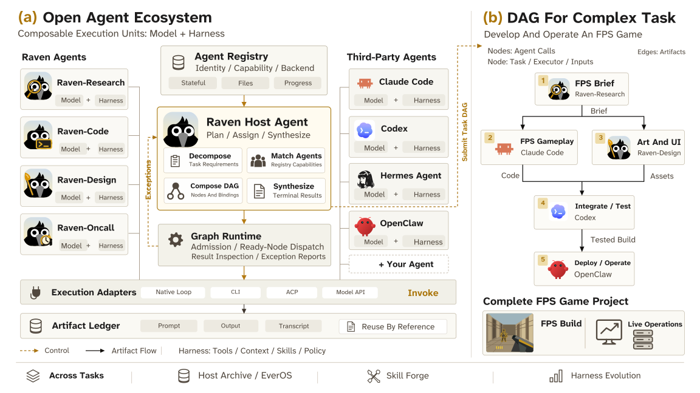
原论文 Figure 2 · 读图： Figure 2先看原生及第三方模型–harness对作为执行单元，再看Host把研究、代码、设计串成依赖图；harness演化、记忆与技能是支持层，不应误读成每个请求都会同时训练所有模块。 回查原图与说明 。图片版权归原作者。节点完成是待判断状态，不等同有返回文本 前驱完成且裁定后，后继才有资格调度；共享instance串行，不同instance可并行。独立judge读任务、输出与轨迹尾部，未完成转异常，Host决定继续、放弃或重规划；失败前驱会跳过后继，未完成输出不能消费。每次尝试保留独立prompt、产物、轨迹文件，已完成节点可在后续图中引用。重要边界：judge故障/超时的可用性回退会把正常返回当完成，所以runtime状态不等于客观正确。
演化只改四类策略接口，接受前要检查干预真正发生 §4基于HarnessBank，Memory管工作窗口，Planning加指导，Capability选工具，Action处理可用响应与完成判定；共享执行壳、评价和接口受保护。Evolver从失败轨迹提出症状、代码位置、期望变化及预先声明的激活事件，生成补丁。候选先过可执行性和日志有效性，再确认至少一次目标干预激活，然后按同任务均分差与标准误做paired-gain筛选；通过后才全训练集复评。模型权重保持冻结。
基因库保持多种失败修复机制，再评价重组结果 基因库以prompt/knowledge/runtime/config编辑类别和失败类型为cell，每cell保留一个完整harness精英；非全局最佳候选也可留在自己的cell供以后复用。重组多个补丁要解决冲突、保留来源并重新评价，收益不能按部件相加。最终训练集选出的harness冻结后才上留出集。固定1.96阈值是操作规则，不是有限样本精确5%检验；重复自适应筛选也不提供全族显著性保证。
即时产物与长期记忆走不同路径 §3/§5让产物写入后释放依赖，记忆异步形成，不让后继等待长期抽取。EverOS按语义边界把对话与工具结果组成episode，解析指代、抽原子事实并保留源记录；时间性计划带有效区间。episode按语义与时间聚合为scene，为profile更新选择证据；用户记忆与agent经验按所有者隔离。Host把归档与查询召回放入明确标为上下文数据的区域，不能把记忆自动当新授权。
Skill Forge负责找到可执行的程序性知识并持续修订 §6从SkillHub、local和EverOS并行召回，以名称的加权倒数排名融合，再补正文、过滤运行策略、让LLM依据任务与可用工具选择。正常选择和调用失败fallback分开，有正文但资源下载失败仍可能不可执行，注入skill ID不证明它执行过。执行case按意图聚类，与既有技能及支持case一起生成修订，持久化和索引后供未来召回。96,401条目录、训练的retriever/reranker和主要技能实验来自先前SkillCorpus；Raven新增的在线多源整合应与继承部分区分。
组合可靠性依赖局部条件，而非agent数量 §2把规划、节点、交接、重试与最终合成都计入共同预算。只有规划正确且每一步在实际到达的条件分布下满足其前置/后置契约，才能用累积错误界得到整图成功下界；不要求误差独立。多个专长互补还不足以证明比任一单agent强，需要同预算单体能力上界。原文两bit互补例子也明确：若给单体相同的两个读取接口，它同样能解决。
实验及结果 主结果：比较对象与支持范围 MAOB在四专家域构造140个任务、覆盖11种至少双域组合，只捕获计划不执行worker。Figure 13中同Qwen3.8-27B下Raven Node F1为0.923，最强baseline 0.776；Exact Match为0.711对0.607。DeepSeek-V4-Flash-0731下Exact Match 0.867对0.762，这支持依赖规划能力，不是端到端产物质量。Table 4的DeepResearch Mixed同DeepSeek-V4-Flash、同搜索/读取工具下，Raven-Research准确率76.5%，MiroFlow 67.2%，DeepSeek-Harness 68.9%；均价分别$0.0242、$0.0374、$0.0211，Raven并非最低费。其Qwen3.5-397B组相对DeepSeek-Harness增益3.3点、McNemar p=0.21，六个同backbone对照中五个p<0.02，不能把六个都写显著。
消融与分析：哪些解释得到支持 Appendix Table 11复用HarnessBank的冻结Qwen3.6-27B结果：Terminal-Bench-2 36.1→45.4、AppWorld 41.3→56.7；七域都提高，但SWE-bench Verified仅26测试题、未过源论文paired-gain门。§7.7/Table 13的SkillCorpus单次消融在Raven×Qwen3.5-397B、SkillsBench上，完整系统22.6%，换未微调检索器13.8%，换约821000条原始抓取目录14.9%，无skill 9.2%，支持清理目录与训练检索共同作用。这些是继承子系统的实验，不能冒充对Raven整体所有模块的独立消融。GDPval四单元平均加1.2–1.9点，但各单元与零统计上不可区分。
成本、负结果与归因边界 MAOB参照图为graph-first构造及审查，图匹配不能覆盖所有有效任务分解，更不测真实执行。第三方商业research模型和费用口径不同，不作harness纯因果比较；多域专家案例、长期oncall与整个网络的可用性也不能被单项分数证明。Judge可用性回退、资源未就绪的skill和记忆推断都保留失败风险；理论的条件可靠性前提未由平均成功率自动满足。
总结 Raven提供一套把异构agent、产物依赖、可复用harness和经验系统接起来的可审计接口。阅读价值在这些边界如何分工，而非“更多agent必然更强”；其规划、research和继承子模块有具体证据，全链路可靠性、交接成本和长期跨设备收益仍需额外端到端验证。
返回本组目录 ↑ · 全部目录 ↑
11 / 27 · 2026-09-04 · 上海首发 · 技能、经验与长期记忆
Code2Skill / CodeSkillBank Grounded Skill Synthesis from Code at Scale for Agentic Intelligence原论文全文 · 版本记录
从维护中的代码抽取可追溯程序知识，用盲重建检验说明是否足够，而不是把代码摘要当已验证技能。
背景介绍 问题与解决思路 方法：从输入到输出 实验及结果 总结 消融与分析 成本与边界 背景介绍 依赖agent旧轨迹建技能库，会受采集模型与旧harness能力限制；仅从文档概括又缺少具体实现支撑。Code2Skill把公共代码仓库作为程序性经验来源，在agent尚未遇到下游任务前离线提取可复用的步骤、前提、不变量、错误处理与适用边界。
问题与解决思路 关键难点不是给函数起个名字，而是抽象掉项目局部细节后仍足以恢复其核心行为。作者用“skill→重建代码→与原实现比较”的往返一致性筛选，再保留原始来源以便审计。这里grounded指有实现证据及LLM一致性判断，并不表示百万条记录都经过执行测试或形式证明。
方法：从输入到输出 源单元先筛可复用性，仓库热度不是正确性保证 §3.2/Appendix C.1扫描截至2026-04-14、超过500 stars的19,769仓库；解析函数、方法、命令入口和文件组件，去除测试、二进制、不安全或过短单元。LLM按可复用意图、操作序列、状态/资源转移、边界与失败处理、接口充分性及非平凡性打标，按选择门和每仓上限进入抽取。被选只是证据候选，并未因此接受skill。
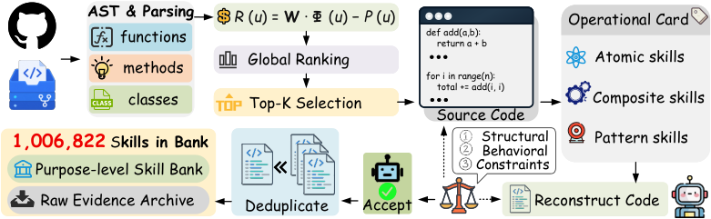
原论文 Figure 1 · 读图： Figure 1沿源单元筛选→三类skill→源body不可见重建→源感知judge/adjudication→证据档案和检索视图阅读。重建与judge的信息不同；接受记录可包含被裁决为重建器失误的分支，不代表重建代码都通过测试。 回查原图与说明 。图片版权归原作者。一份记录保存可做什么，也保存何时不能做 按atomic operation、composite workflow、recurring pattern三类生成结构化记录，分别适应局部操作、多步骤流程与跨实现模式。字段区分执行步骤、前提、不变量、失败路径、anti-goals与源span，附仓库/commit/文件/symbol。Figure 2的DNS-over-QUIC例子不是泛泛“失败重试”：只对缓存连接失败关闭并重建，只在0-RTT拒绝时清token，最多重试一次，新连接失败不得无限循环。
盲重建与来源感知裁决有明确的信息边界 Appendix C.2先以worth_extracting和value_score≥0.45过滤。重建器看到完整skill、目标symbol和接口，看不到源body、仓库或文件路径；Python产物检查可parse，其他语言只记录非空有效性，这本身不决定接受。judge看到源与重建，却不见测试、执行轨迹或类型检查，equivalent=true直接接受，不另设confidence/risk阈值；false再交adjudicator区分“说明不支持”与“重建器失误”。后者可以keep=true接受skill，但不把失败代码当有效产物。
证据档案与检索视图分开维护 接受记录总计1,006,822，feature tagging一对一添加任务/能力/约束等受控标签，不合并来源。purpose索引另按任务族、意图动作和对象聚类，确定性规则按流程、不变量、错误、证据、长度、类别选择一份已有记录为代表，不让LLM重新编造簇级skill。原始档案保留可更新/废弃的来源；实际主实验为效率随机取10%检索记录，并不是每次在全百万库检索。
技能何时进入推理与训练需要分别比较 默认是起草→review→revision，skill仅给reviewer，无skill对照保持同一循环。其他接口包括首轮prompt、planning、reward verifier与训练后review；纯推理实验冻结模型，RL实验从同Qwen3-32B SWE-World checkpoint训练。技能可只给reward端而不暴露给policy，因此需要说明究竟是哪一条决策链得到额外知识。
实验及结果 主结果：比较对象与支持范围 Table 1九个模型/推理模式×八基准，描述性宏平均42.90→47.90，相对+11.7%；72个协议匹配比较中57个提高，所有九个SWE比较提高。SWE统一475题子集，不是官方500题整集；DS4-Flash reasoning在SWE34.32→44.70、Terminal33.90→45.20，但BigCode43.27→42.34；Qwen3.5-27B reasoning的Terminal37.08→31.46、AgentBench55.56→53.47也下降。Table 2同DS4-Flash reasoning、同下游接口、五次运行均值±std，七基准Code2Skill平均49.5，对Trace2Skill31.0、ExpeL27.9、SkillRL-Bank32.8；SWE44.7±1.6对最强36.8±1.9，Terminal45.2±2.6对31.9±3.3。比较的是不同来源与构造成本的完整bank，不是等规模等构造预算的单算子消融。
消融与分析：哪些解释得到支持 §5.4不同插入位置改变了执行接口，首轮prompt还移除review/revision，不能把组间差异全归因“插在何处”。§5.5/Figure 6在BigCode Instruct-Hard，k1→10使可见skill从2.1K→17.8K字符，Qwen仅33.10→34.50，DS4始终不高于无skill；k3摘要6,352→707字符（−88.9%），DS4 28.40→31.80、Qwen保持原分。purpose去重三组model/render组合下降，代表记录可能挤掉局部适用内容。Table 3的RL同第150步resolve无skill24%、full prompt32%、summary31%、reward31%、review38%，只有单checkpoint且无重复seed，不能推出更快收敛或最终策略必然更强。
成本、负结果与归因边界 Appendix B按四种构造结果分别抽样人评，直接接受的描述准确96%、重建正确84%、值得保留76%；裁决接受的描述88%、值得保留84%，但原重建正确为0%。因此“接受库84%重建正确”只指直接接受分支，不是全库总比例；接受库描述92%/保留80%的汇总不能当逐stage因果提升，原文未充分给抽样规模和全分支权重。Figure 7仅25对同接口且同公开/隐藏测试通过的人类/AI实现，各抽50skill，400个LiveCodeBench任务得93.00%/93.50%，16题结果不同（人类独有7、AI独有9），小差距不证明统计等价。完整库并无相同测试保证。上下文成本是字符而非token，且排除检索器文字；构库成本、源与评测可能共享代码知识的污染审计仍需独立说明。
总结 Code2Skill的重要性是把可维护代码变成有条件、有出处、可回查的程序知识，且将“忠实说明”“能重建”“值得复用”分成三种标准。跨任务收益、紧凑摘要与小规模AI代码来源实验有参考价值，但LLM往返一致性不能替代执行验证；广泛部署仍需检查来源版本、任务适用性和真实失败路径。
返回本组目录 ↑ · 全部目录 ↑
12 / 27 · 2026-09-23 · 上海首发 · 技能、经验与长期记忆
JitMem Just-in-Time Memory: Learning to Curate Task-Adaptive Memory for LLM Agents原论文全文 · 版本记录
最值得借鉴的是把“经验如何变成当前指导”放到能获得即时反馈的位置。
背景介绍 问题与解决思路 方法：从输入到输出 实验及结果 总结 消融与分析 成本与边界 背景介绍 长期运行的智能体要把过去经验用于新任务。若写入时就将轨迹压成固定技能摘要，后来的新问题可能需要已经丢掉的细节。JitMem 的任务是读取当前请求和过去完整轨迹，生成只对这次任务有用的短提示，让冻结执行器更容易完成任务。
问题与解决思路 写入时决定记什么，会在很久以后才知道是否有用，强化学习难以分配信用。本文将可学习决定移到读取时：原始轨迹先保存，当前任务到来后再定制摘要，并用当前任务执行成绩直接评价摘要。训练对象从整个执行智能体变成独立的记忆整理器。
方法：从输入到输出 保留原始轨迹，检索只看任务描述 §3 的记忆库保存任务、交替观察与动作的完整记录，不在写入时总结。BM25 对历史任务描述检索 top-k，默认 k=3；它不对全部轨迹正文建语义模型，也不参与训练。返回的完整轨迹按排名拼接给整理器，使同一历史记录能为不同新任务贡献不同细节。
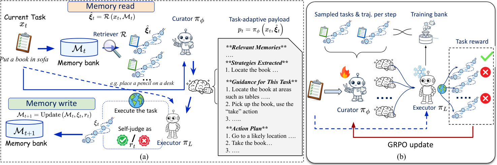
原论文 Figure 1 · 读图： 左侧任务先检索记忆，再由curator组装任务适配payload交执行器；任务后写回记忆。右侧GRPO反馈训练curator，必须区分运行时库变化与训练时参数更新。 回查原图与说明 。图片版权归原作者。整理器生成一次性简报 整理器输入当前任务和检索轨迹，输出自然语言 payload：相关经历、有效策略和当前任务指导。执行器只接收这份短简报而非整段原始历史。简报本身不写回库；执行完成后产生的新轨迹才有资格入库，避免摘要被反复摘要造成不可逆信息损失。
当前任务的收益直接训练整理器 训练库由基础执行器先跑训练任务、用真实成功标签筛选得到，并在训练期间固定。每个任务采样 8 份 payload，冻结执行器分别运行，获得 ALFWorld/τ²-bench 二元成功奖励或 WebShop 连续分数。GRPO 使用组内奖励减均值作为优势，不做标准差归一化，提高更有帮助的 payload 的生成概率；Qwen3-8B 整理器更新，执行器和检索器不更新。Appendix A/Table 7 报告最多 100 个 RL steps、学习率 1×10⁻⁶、KL 系数 1×10⁻³。
测试从空库开始，不能偷用真标签写记忆 测试默认空库，按流式任务增长；为提高效率，一个批次共享相同库状态，批结束再更新。是否写入由执行器自身充当 LLM judge 判断成功，不向记忆库泄露测试验证器标签；真实标签只用于最终评分。任务顺序会改变经验可用性，因此重复不同顺序评测。训练固定真标签库与测试动态模型判断库存在分布差异，作者单独分析。
实验及结果 主结果：比较对象与支持范围 Table 1 使用三个冻结执行器、每组 3 个任务顺序报告均值与标准差。Qwen3-8B 执行器下，JitMem 的 ALFWorld 成功率 77.4±2.9，对照 SkillOS 为 61.2±4.6；WebShop score 为 61.1±0.9，成功率 32.8±1.7，对照为 40.6±0.7 与 16.5±0.7。迁移到 GPT-5.4 执行器，ALFWorld 为 86.7±0.7。Table 3：整理器在 Qwen3-8B 上训练后迁移 GPT-5.4 达 86.7±0.7，直接用 GPT-5.4 执行反馈训练达 88.1±0.9，迁移差距 1.4 点。τ²-bench 的高分配置含未训练 GPT-5.4 整理器，不能全部归因于 RL。
消融与分析：哪些解释得到支持 Table 9 固定 Qwen3-8B 整理器与执行器，完整 JitMem 的 ALFWorld 77.4、WebShop score 61.1；移除检索轨迹降至 62.6 / 47.9，移除任务适应性降至 66.0 / 49.6，支持“原始经验 + 当前任务条件”共同重要。Table 8 将 k 从 3 加到 5，Qwen WebShop 成功率仍为 32.8，Gemini 则从 50.5 降到 48.6，更多记忆并非单调有益。Table 5 的分阶段刷新对 Qwen 成功率 32.8→35.6，但给 GPT-5.4 测试库预热反而 45.4→44.1，冷启动不是唯一瓶颈。
成本、负结果与归因边界 Table 4 在 ALFWorld/GPT-5.4 上完整方法平均输入 9.8K tokens、输出 0.87K、11.6 步；无记忆为 9.0K、1.40K、17.8 步。这是论文该配置的 token 与步数核算，不能推广为所有检索库规模都更便宜。原始轨迹长期存储与 judge 误判风险仍存在。
总结 最值得借鉴的是把“经验如何变成当前指导”放到能获得即时反馈的位置。训练只更新整理器，有利于跨执行模型复用；前提是任务有可信奖励，检索能召回有用经验，且在线成功判断不会把错误轨迹不断积累。
返回本组目录 ↑ · 全部目录 ↑
13 / 27 · 2026-09-28 · 上海首发 · 多智能体协作与系统效率
AsyncLLM LLMs are General Asynchronous Agents原论文全文 · 版本记录
把“边看、边想、边行动”写成共享模型记忆的协程，而不是等一条完整回复结束才处理新输入。
背景介绍 问题与解决思路 方法：从输入到输出 实验及结果 总结 消融与分析 成本与边界 背景介绍 常见智能体按照读输入、想、调用工具、等结果顺序运行，但视频流、游戏和监控不会等它想完。不同应用过去各造专用异步架构；AsyncLLM提出可编程推理接口，让同一个冻结模型的多个协程在不同速度工作并读取彼此的中间状态。
问题与解决思路 核心不是普通并行发多个独立API请求，而是把KV缓存和混合模型的递归状态切成可组合CacheBlock，再定义每条协程能看见哪些块、以何顺序看。这样新观察可进入正在继续的推理，快速探针无需反复把整段慢思考重新编码。无需任务特定训练，但需要开放模型推理内核和任务harness设计。
方法：从输入到输出 一次forward写一块，cache_view决定读哪些共享记忆 §3.1用Python asyncio表示thinker、writer、probe等协程，各自生成到自己的块，可用Event/Lock/Queue同步。thinker看提示和自己的思考，writer可额外看thinker不断增长的块，再写自己的输出；两者无需重新复制token做prefill。块支持创建、清空和合并。若原来顺序编码，重组注意力可与相应缓存运算等价；并发相互读取的状态通常不对应任何顺序生成轨迹，作者只通过实验证明模型仍能利用它，并无通用语义等价保证。
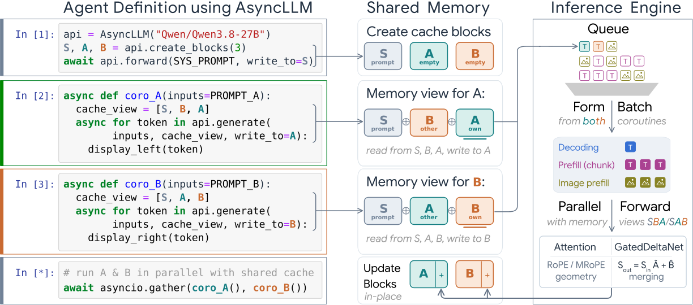
原论文 Figure 1 · 读图： Figure 1先看左侧协程分别写哪些CacheBlock，再读中间不同view如何按不同顺序组合相同块，最后右侧引擎把并发请求合批。共享的是已算的模型状态，不是完整复制聊天记录；图中的并发可见性也不等于按任意新顺序重算整模型的严格等价。 回查原图与说明 。图片版权归原作者。全注意力改当前query的位置，不搬历史KV §3.2保留各块从0开始的RoPE keys，按块在当前逻辑视图中的位置只旋转query，避免每步改写所有历史KV。图像MRoPE只改时间方向相对位置，空间高宽不动，并记录块真正的位置跨度而不是token数，因为一帧可占许多视觉token。块内表示仍是生成时算出的表示，后来换顺序不会重新计算上游隐藏状态。
GDN递归状态改存块级仿射变换，再按视图组合 把每步写成S_new=S_old A+B，一个块保存累计(Â,B̂)。左右块组合为(A_L A_R, B_L A_R+B_R)，所以重组成本按块数而非token数增长；每来新token增量更新块摘要。该性质要求更新对旧状态是仿射，不能泛称任意递归网络都适用。Appendix D.3特别说明短因果卷积保留创建时边界，换前驱不会重算，例如Qwen感受野4，因此整个混合模型重排不严格等价于按新顺序重跑卷积。
调度长prefill与短反应一起推进，解决后台任务堵住前台 §3.3/Appendix C在mini-SGLang上把prefill和decode统一到队列，长prefill切块，每批给活动协程平衡份额，剩余请求回队尾；超批容量交替服务。同一块的多个写者禁止在同批执行，后来的延到下批。paged KV共享页引用，FFN/MoE复用原内核，只改注意力/GDN部分。不是靠Python协程本身获得GPU并行，而是推理引擎主动合批与缓存共享。
同一并发模板落到视频、游戏和系统日志 §4/Appendix G视频用单forward yes/no事件探针（概率EMA β=.8）、后台thinker、输出探针、描述writer及非LLM汇总，TV音频先ASR成文本。游戏把writer换成快速动作协程与early-exit探针，慢层提供方向；日志每块最多1秒或1024字符、至少一行。Appendix J还能让模型编辑自己的generate/act代码，保留缓存和后台任务，外部harness评价后反馈；当前只是两个游戏的探索性例子，尚非可靠自优化框架。
实验及结果 主结果：比较对象与支持范围 Table1 SoccerNet流式协议中Qwen3.5-9B的AUROC/TriggerAcc/TimVal为.677/62.82/39.62，Mage-VL为.555/52.79/27.87；ProactiveVideoQA全体PAUC(ω=.5)/TriggerAcc/TimVal为.541/52.99/17.19对.428/43.27/10.03。这包含模型底座差异，不能只归因异步机制。Table2的34个DevOps监控任务，同Qwen3.6-35B-A3B顺序准确61.76%、8452 forward、看100%事件，AsyncLLM55.88%、3837、55.49%；9B为47.06%、8726→41.18%、2582。异步更早但各损5.88个百分点，必须呈现速度–准确率折中。Figure4两个ViZDoom场景各100episode，以forward计反应延迟，异步比顺序更快且保留推理收益；作者明确不是该游戏SOTA。MATH500和513对ShardedVQA验证思考中接收纠正，纠正太迟、已经答完时会失败。
消融与分析：哪些解释得到支持 Table2同模型早答工具与跳行对照区分“少看一点”与异步：35B早答47.06%/6641、跳行26.47%/3686，异步55.88%/3837，说明其收益不能仅用跳过输入解释。所有监控臂都加anti-distraction prompt，未加时35B因思考无关问题准确率<10%；所以training-free不代表无需任务prompt。Mage-VL在Appendix H调segment/FPS/frame/codec，最终选择8秒/2FPS/16帧HEVC来平衡指标；其它codec能达到更高TriggerAcc如90.63%，但TimVal仅4.31，不能声称三个指标逐一压倒所有配置。9B多项视频分数高于27B/35B，没有模型越大越好趋势。自编协程在HealthGathering初效好、DeadlyCorridor较差，未给持续自改进多轮统计。
成本、负结果与归因边界 Table3/Appendix E均单H200，总吞吐不是单协程速度：9B 1/8协程106/552 token/s，35B96/438；32协程9B1085，但实际任务平均仅1.5–3.5活跃协程。35B从单到4协程decode步时约10.5→14.1ms，吞吐增加仍可牺牲单步延迟。视频约2.5–4.4秒视频/GPU秒，含TV音频1.4–1.8；不代表消费设备实时保证。CUDA graph对4096-token prefill可反而649.7ms对eager179.6，优化并非所有负载受益。任务forward指标把同批两个token算一次，不能视为token总量或FLOPs节约；没有端到端美元比较。实现仅验证Qwen相关早融合混合模型，MLA、学习稀疏注意力和晚融合视觉等仍属设计扩展，未全面实现验证。
总结 AsyncLLM提供一个可检查的基础抽象：分开的推理活动共享可组合记忆，并由引擎公平调度，让已有模型利用异步输入。证据支持无需额外训练的多场景可行性与响应收益，同时保留错误率、任务prompt、硬件和内核支持边界；不能据标题说所有LLM已是可靠通用异步智能体，更不能把自写协程演示等同RSI已解决。
返回本组目录 ↑ · 全部目录 ↑
14 / 27 · 2026-09-04 · 上海首发 · 环境构造与可验证训练
Terminal-Universe Terminal-Universe: Turning Agent Trajectories into Scalable Terminal Environments原论文全文 · 版本记录
把工具轨迹还原成未解工作区，再生成跨仓库与多轮训练，收益来自重新采样和可执行上下文。
背景介绍 问题与解决思路 方法：从输入到输出 实验及结果 总结 消融与分析 成本与边界 背景介绍 终端智能体公开轨迹越来越多，但轨迹只记录一次行为，不能重复试错或用更强教师重新求解。实际训练需要能回滚、可执行、能生成新目标的工作区。本文把Read、Write和Edit视为原环境的部分观测，把静态示范转成可复用环境；其产物不是逐字重建历史仓库，而是足够支持任务的近似工作区。
问题与解决思路 已有环境生成通常依赖Git历史、故障注入或从零合成，分别受限于提交材料、修bug任务类型和合成器偏爱的干净小项目。轨迹提供真实文件结构，却不包含未读文件、完整依赖和被截断内容。关键挑战是补足上下文但不把原代理已经做出的答案带回初始环境，并使后续任务的测试与真正用户需求一致。
方法：从输入到输出 顺序回放，明确移除答案 §3.1把多来源文件操作归一为时间流，记录每个路径最早和最后可见版本。初始工作区只取原有文件被第一次修改前的内容，排除原代理新建的文件；已有修改单独保存用于后续核查。补全代理依据原始请求、部分文件与清单恢复依赖、配置及缺页，禁止实现用户任务。只读judge判断上下文是否足够，判断标准不是每个项目已经能构建成功。
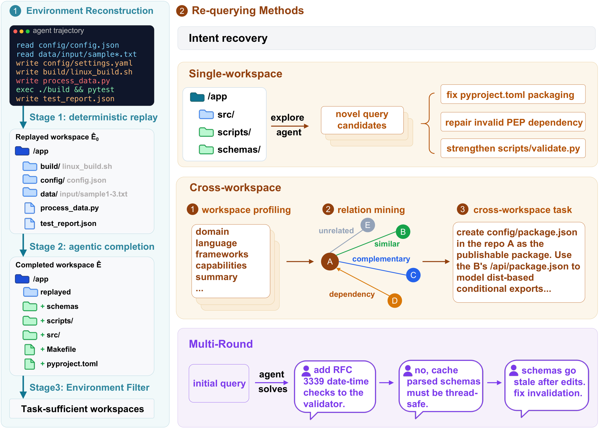
原论文 Figure 2 · 读图： 图2依次看轨迹回放与补全的环境入口，再看Intent Recovery、Single-WS、Cross-WS和Multi-Round四条分支，最后看验证过滤。跨工作区分支需要参考只读，多轮分支保留状态和私有验证，都是训练数据生成而非测试时外援。 回查原图与说明 。图片版权归原作者。同工作区换题，跨工作区增加信息依赖 Intent Recovery保留用户真的提出的要求，合并同主题澄清但排除无关转题。Single-WS探索源码，合成5个有依据且可测试的候选后随机选一。Cross-WS先做能力画像和TF-IDF邻居检索，再由LLM判定有向能力缺口；将缺功能的目标设可写，具有实现的参考设只读。题目不得泄漏参考内部路径与至少3项隐藏事实，求解者必须自行读代码并迁移，验证器同时检查参考未改。
多轮持续状态，但反馈不是泄漏测试 Multi-Round保留工作区与需求跟踪器，每轮先提交新规格并生成验收测试，然后由编码代理行动。测试同时检查新增和仍有效旧需求；求解者看不到测试脚本和traceback，模拟用户将失败翻译成可观察的自然语言投诉。失败时修正同一要求，通过后可扩展或显式替换要求，最多6次续问。清掉末尾连续失败段，至少两轮通过才收录，中间失败及随后修复保留。
生成验证与SFT的边界 Single/Cross验证器只看初始工作区和任务，不看解答，生成离线pytest并检查初始环境的红灯条件。成功教师轨迹要求所有测试通过；Intent Recovery对照不做验证器过滤，以免把重新求解收益混入筛选收益。所有模型组件均用Qwen3.7-Max xhigh。最终25,386单工作区、3,512跨工作区、3,079多轮记录合计31,977条约1.42B token，Qwen3.5-27B做两epoch SFT、学习率7e-6、batch256、序列256K；这里没有在线RL或部署时持续更新参数。
实验及结果 主结果：比较对象与支持范围 Table 3在Terminus2-XML中，Qwen3.5-27B从TB2.0的41.6→52.8、TB2.1的46.2→58.1；Claude Code上TB2.1为47.8→58.2。前者11.9是百分点，不是相对增幅。EvoCode v2的26任务227轮，MT@4从6.3→20.1，case score从67.8→76.1；MT@4是四次运行中至少一次连续无失败到达该轮，再先按任务内部轮数平均、后按任务平均，绝非单次通过率。TB六次、EvoCode四次独立运行；其他公开模型的scaffold、上下文和解码不同，跨模型排行榜不是严格同预算因果比较。
消融与分析：哪些解释得到支持 Table 4同35.8k数据，原轨迹SFT平均36.7，重新求解Intent Recovery为52.1，甚至原轨迹低于基座47.0；同时换更强一致教师，不能仅归因环境还原。Table 5同量同任务补全比仅回放52.9对48.7。Table 6验证过滤对Single-WS仅56.4对56.0，对Cross-WS为55.4对53.2且数据少一半。Table 9加多轮令MT@4 18.4→21.0，拿掉轮级验证回落18.8；完整混合20.1并非各项都最佳。Table 10同约35.1k条数时增加环境56.0优于每环境多一道题53.8或多条解53.9，但条数匹配不是token、合成成本匹配。
成本、负结果与归因边界 原359,593条轨迹得到68,263个重建环境，去污染去重后评估38,294终端环境及1,900 SWE仓库，最终37,273个足够工作区，不能将它与32k训练记录混为一谈。补全让终端足够率40.2%→93.5%，SWE20.1%→77.1%；随机人工查看30个补全，8个新增大量非必要内容，虽未发现答案，样本不能保证全库无泄漏。每任务12核32GiB、TB4小时/EvoCode10小时，上下文256K、176K压缩、最多500轮；多轮记录中位126.1k token，显著高于Single的30.4k。全流程美元成本未给。
总结 启示是先恢复可重复实验的执行上下文，再决定在哪个维度扩数据。真实轨迹不是天然高质量监督，测试过滤也不能保证正确：同一教师生成题、解和测试可能共享盲点。标准Ubuntu容器、84.7% Python占比与源轨迹覆盖限制迁移，13-gram去污染也非所有语义泄漏保证。此工作支持SFT数据生产与多轮能力改善，不等于已经拥有开放世界自主学习。
返回本组目录 ↑ · 全部目录 ↑
15 / 27 · 2026-09-17 · 上海首发 · 环境构造与可验证训练
ScienceIDE ScienceIDE: Turning World's Scientific Codebase into Agent Learnable Environments原论文全文 · 版本记录
把科学等价性判断固化为可重复执行的环境契约，再分别验证代理评估、SFT和局部RL。
背景介绍 问题与解决思路 方法：从输入到输出 实验及结果 总结 消融与分析 成本与边界 背景介绍 科学代码能运行不代表科学结果正确：粒子顺序、时间步继承、系数精度及守恒量都可能改变答案。已有编码基准更多依赖单元测试，科学任务还需要专家明确哪些观测量应相等、哪些实现差异可以接受。本文把科学软件转成持续生成学习经验的基础设施，而不是让大模型独立发现新科学规律。
问题与解决思路 核心瓶颈是把专家判断变成可复用的执行契约。源代码中的模块必须按科学责任划分，不只是文件聚类；容器、输入、编译配置、结果对齐和容差共同决定奖励含义。若只用候选自己重复运行的一致性，错误公式也能稳定通过，因此参考解与独立科学观测不可缺少。
方法：从输入到输出 先固定科学契约，再生成任务 §2与附录8固定源码版本和科学模块，由专家/策展者批准职责、可观测输出和等价标准。优先逐点比较绝对加相对容差；粒子按身份对齐，不把存储顺序、运行时间、随机抽样和特征向量相位当科学差异。名义与扰动初值各自重跑，必要时加合法替代编译来估计变化范围；这些是有限校准证据，不能自动证明通用容差。点值误差不可合理控制时才改用守恒等不变量。
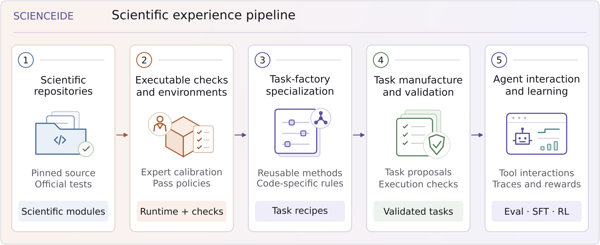
原论文 Figure 2 · 读图： 图2沿科学源码进入模块与环境契约，再到任务生产和代理执行反馈。重点辨别专家固定的科学检查和可自动扩展的任务工厂：奖励复用前者，不由求解代理自行重定义。 回查原图与说明 。图片版权归原作者。以正反执行证据验收生产任务 通过的契约被修复、实现和加速任务共同复用，生成器只改变初始状态或交付目标，不能暗改科学等价性。任务要有正确见证、空提交与缺陷起点；故障必须留出奖励上升空间，正确修复应消除失败。注册库64环境27代码库、1076检查、2812任务，其中2515修复、295实现、仅2加速。图中的七类任务是能力分类，不是七类都已有同等规模实证。
SFT与RL是两条独立实验 SFT用经数值验证的GPT-5.6-sol示范，4567训练片段来自564任务，544验证片段来自81任务，任务ID不交叉但近似变体未独立审计。Qwen3.5-4B/9B和Qwen2.5-72B用全线性层LoRA，rank32、alpha64、dropout .05、batch64、序列36864、学习率2e-5、3轮216步；只监督新增assistant/tool动作，旧上下文、观测和标记失败动作遮罩。RL另从基础Qwen3.5-4B开始，并非从SFT继续，按源码/变体家族切分LAPS与MITgcm任务，训练和测试均给文件行号及编辑类别提示。
长程GRPO需区别预算截断与真实错误 附录11采用不除组内标准差的Dr式优势、每题8条、非对称clip .2/.3、学习率1e-6、50轮、响应65536token，无KL/熵项。预算耗尽轨迹的token不参与策略损失，但奖励仍进入组基线；基础设施超时、正常结束后评分故障另行分类。否则截断被当成负行为，策略可能把每轮推理越缩越短却仍耗尽交互轮数。这里只验证了有限环境内学习，不是开放科研RSI。
实验及结果 主结果：比较对象与支持范围 §3 ScienceIDE-Hard固定85任务18环境，52修复33实现，15模型8供应商分别用原生harness，一小时且不给定位提示。严格成功必须完整通过私有科学检查。Fable5.1单次67.1%，Opus5为64.6%、Astra63.1%，后两者重复区间重叠；14模型每题至少三次，Fable仅取最新有效一次，不能当同精度排名。十分钟回顾曲线Astra49.6%而Fable25.9%，只是从一小时运行截取，非真正短预算重跑。附录11的RL测试LAPS14题平均奖励.357→.857、MITgcm实际记录21题.286→.571，均不是严格成功率，也不能套用无提示Hard榜单。
消融与分析：哪些解释得到支持 SFT公共基准先筛33配置，图中选择提升≥3点的15项，另做不重叠确认集。确认CodeXGLUE defect 4B在2604题45.93→52.92；refinement 9B在5707题1.17→2.37；BBH排序9B的125题27.2→63.2。但HumanEvalFix Python 9B在36题86.11→77.78且置信区间跨零，72B部分筛选收益未复现。不能把挑出的收益包装成全基准普遍提升。截断遮罩消融中未遮罩奖励先.339→.573后崩到.078，每轮token1125→327；遮罩运行.487→.914且截断28.9%→2.3%，不同初始运行仍限制严格因果归因。
成本、负结果与归因边界 RL用24张95GB H20，8张生成、16张训练，16并发episode，超时2700秒、验证900秒；代表训练步3210秒不等于总GPU小时。Hard每任务成本Fable约7.90美元、Astra3.56美元，混用九模型harness估值与六模型归档API价。附录8的3195条探测轨迹703美元只是订阅计量探测，不是环境建设总成本。完整性审计发现历史5314试验455次上游命令、21次确实抓取、13次算成功；修正版使用活容器白名单并作废确认污染轨迹。Gemini供应商抓取和DeepSeek聚合凭证跨模型调用还需另外禁用重跑，容器隔离不能自动覆盖供应商侧渠道。
总结 价值在于将科学判断和重复经验生产拆开，给训练反馈一条可追溯的数值证据链。85题评估、1076科学检查、2812生产任务、提示式RL和独立SFT必须保留各自分母。家族内迁移、公共源码先验、模型辅助失败标签与少量加速任务都限制外推；尚未展示跨代码库开放科研或自动专家替代。
返回本组目录 ↑ · 全部目录 ↑
16 / 27 · 2026-09-19 · 上海首发 · 环境构造与可验证训练
RecreationWorld RecreationWorld: Scalable and Verifiable Environments for Hybrid Computer-Use Agents原论文全文 · 版本记录
让代理反复操作参考软件、写实现并检查自己的运行结果，以隐藏行为测试支撑跨平台训练和评估。
背景介绍 问题与解决思路 方法：从输入到输出 实验及结果 总结 消融与分析 成本与边界 背景介绍 GUI代理擅长操作现有界面，终端代理擅长写代码，但真实数字工作需要两者反复交替。只给截图会缺少状态转换，只给文字规格又省掉主动探索。本文让代理观察正在运行的参考应用并重建行为，用同一可执行参考产生训练筛选和独立评估证据。
问题与解决思路 复刻不是要求源码相同，而是要求在相同操作和输入后产生相同行为与视觉结果。因此关键是参考可重复运行、测试不绑定原实现、候选不能看到隐藏答案，并且评分不能把缺失检查从分母删掉。探索—实现—验证是单条推理轨迹内闭环，跨轨迹参数提升则通过另行SFT完成，两者不能混称在线递归学习。
方法：从输入到输出 统一交付契约但保留平台原生语义 §2与§4覆盖Ubuntu/macOS/Windows/Android/Web。桌面交源代码及build/launch入口，Android交Gradle工程APK，Web交固定React栈下自包含index.html并保留路径路由。任务隔离worker固定运行时、工具链和参考版本，持久保存进程与图形状态，一条复刻rollout允许20小时。代理自主选择何时GUI探索、代码修改和运行检查，没有强制先观察后实现的单次流水线。
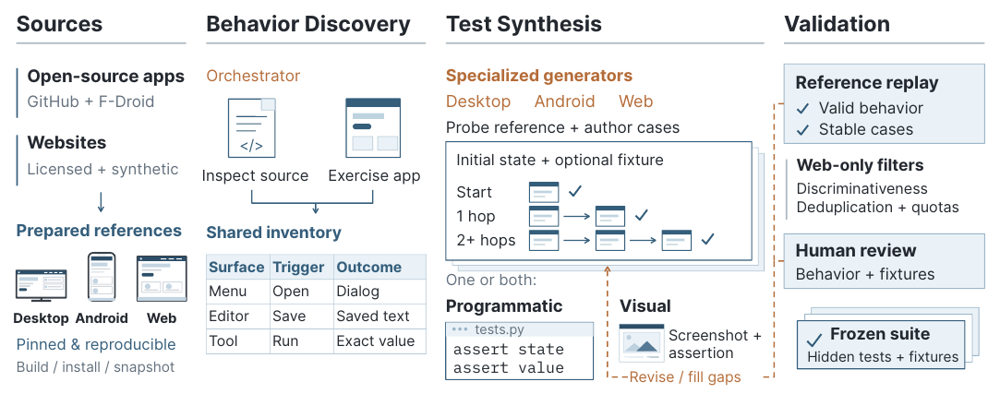
原论文 Figure 4 · 读图： 图4按参考准备、行为清单、测试生成、参考回放和人工验证、冻结评估套件阅读。它展示的是训练及评估环境的生产链，和图2中求解代理自行探索—写码—验证的推理闭环不同。核心证据来源始终是运行参考的可观察行为。 回查原图与说明 。图片版权归原作者。测试从参考的行为取证而非从源码推测 构造器结合源码/页面清点与真实交互，记录特征、触发动作、输入fixture与可见响应。桌面拆结构、菜单、按钮、计算、状态、文字六路，Android改为适合移动端的六路，Web采用脚本、代理、交互、视觉四轨。每个断言先在干净参考实例执行，再人工审查，失败不稳定项修复或移除后才冻结。81任务打包393文件只是fixture树文件数，不是393个独立测试样本；平台宏平均77%左右案例离开初始界面、24%跨至少两个界面，94.2%检查动作后结果。
程序与视觉两个固定分母 程序检查用AT-SPI、AX、UIA、UiAutomator或DOM/ARIA，选可见名称角色而不是源代码内部标识。视觉检查由温度0的Qwen3.7-Plus对候选截图和参考导出的自然语言事实给二元判断。构建/启动失败、预期检查缺失或未触达记零；judge传输解析故障是无效测量需重跑。桌面移动端计通过比例，Web功能按特异度加权、视觉先按页面视口汇总；最后应用内、平台间宏平均，再平均Prog/VLM，故总分不是完整应用成功概率。
验证筛选后SFT，不是在线RL Qwen3.8-Max在五平台环境生成长轨迹，按任务行为验证器拒绝采样，每平台留7000条，合计35000条同一数据分别训练已后训练Qwen3.7-Plus与内部Qwen-Flash-CPT。条数平衡不代表token平衡。论文未给足学习率、训练步数和完整算力账单，曲线进度按各运行归一化且相对首个测量checkpoint，不宜当作未训练基座到最终的严格净收益。
实验及结果 主结果：比较对象与支持范围 250题每平台50，10前沿模型的主评估均是直接MCP。Astra总分58.06%，Opus5 44.16%，Sol42.06%；Astra达到程序≥90%覆盖17.6%应用，程序全过仅2.8%，其他模型至多0.8%。五个分布外迁移基准ProgramBench200、GameCraft140、Vision2Web193、OSWorld2.0的108、WeaveBench114任务均每checkpoint每题一次，两条训练曲线终点都高于首测点、最大17.9个百分点，但各种partial/rubric/视觉分数不能当同一成功率。附录A.5记有harness版本和预算差异，所以证据是探索性迁移而非完全控制实验。
消融与分析：哪些解释得到支持 辅助实验单独用Opus4.8在50个Windows任务比较直接MCP与持久Node.js SDK：模型在一次调用中循环、分支、保留句柄并筛选观测；39对具备正常终止和完整usage的轨迹用于效率，质量使用全部有效评估对。观察到每任务4.12→3.04小时、90.50→41.58美元，输入token−40.7%、工具文本−65.5%、输出+15.7%。driver与提示也改了且每题仅一次，不能把全部节约归因于REPL。最终修改后重新启动并GUI检查的严格闭环比例仅23.6%—47.5%；领先该比例的Qwen并非榜首，因此“多看图就必然提高”没有因果证据。
成本、负结果与归因边界 主评估不同模型上下文256K—1M、输出32K—128K，Codex与ClaudeCode不一致。资源分析每任务累计输入2300万—2.59亿token是反复计入上下文的累计usage，绝非峰值窗口；API估价假定90%cache-read且不含工具/VM。源盲性也不统一：Web必然能读取客户端，直接复制被检测后封顶.10；Android安装包理论可恢复且未证明包级出网过滤。桌面有权限和防火墙，审计仍不能消除训练期记忆；附录Kartova把参考变成5.23MiB中间JSON逃过检测，说明高分与原创性要分开审计。
总结 结果支持以参考执行构建混合GUI/编码经验，但还远离完整软件替代。原生平台89.4%候选比参考代码少、中位仅16.9%，多数状态/计算弱于静态结构；代码更少本身不是失败原因，功能覆盖才是关键。固定离线应用、有限隐藏测试与VLM判断无法证明全状态等价，也未覆盖真实账号、多人和在线服务。可迁移的工程原则是固定测试分母、最后修改后验收实际交付物、把来源隔离与结果正确分开治理。
返回本组目录 ↑ · 全部目录 ↑
17 / 27 · 2026-09-19 · 上海首发 · 环境构造与可验证训练
CodeMidas CodeMidas: Scaling Agentic Coding RL Environments from Code Itself原论文全文 · 版本记录
从已实现功能挖空生成任务，把原程序执行变成测试依据，再用攻击与解答复核筛掉坏奖励。
背景介绍 问题与解决思路 方法：从输入到输出 实验及结果 总结 消融与分析 成本与边界 背景介绍 编程代理的RL依赖两样资源：覆盖真实工程的任务和可靠奖励。Git issue、提交记录与既有测试虽有用，却只覆盖人曾经记录和修理过的部分。源码本身还包含大量完整功能，既能告诉我们任务应该干什么，也可提供独立保留的参考实现，因此可将真实代码变成训练环境。
问题与解决思路 难点并非删掉几个函数，而是规定外部行为同时允许不同正确实现。若测试写死原程序私有符号、字符串措辞和偶然顺序，正确替代方案也会失败；若删除代码后缓存或安装包仍留原答案，代理可以绕过真正工作。CodeMidas将任务规格、可运行初态、参考执行与多层过滤作为一个生产流程，其学习目标仍是软件任务完成，不是优化生成器本身。
方法：从输入到输出 从公开入口圈定功能再删除实现 §3.1代理检查代码结构与构建元信息，优先选需要跨文件推理、具有CLI/纯函数/有状态API外部入口的功能。追踪共享依赖、删除核心实现并调整残余代码成为合理起点，题目写清输入、行为与必须公开的接口。原实现单独保留，求解者只看题和适配后仓库，可以自己选择算法及内部辅助函数。
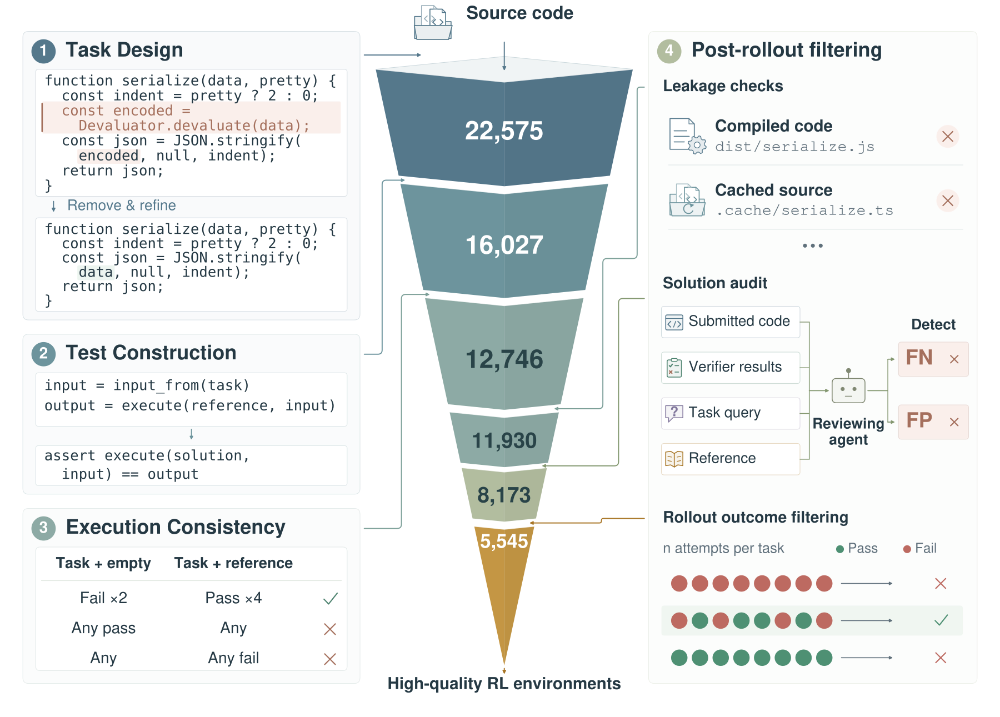
原论文 Figure 1 · 读图： 图1四模块对应功能任务设计、执行锚定测试、环境一致性、后rollout过滤，金字塔表示逐步保留任务数。原实现留在作者侧用来建立行为参考，不能把隐藏验证器画成求解者可见工具。 回查原图与说明 。图片版权归原作者。用原程序实际运行确定测试答案 §3.2先把每条需求映射到输入与边界案例，再调用参考副本公开入口记录结果。CLI检查进程输出，纯函数检查返回值，有状态API检查跨调用顺序和清理行为。没有写进规格的细节不固定，例如只要求异常类型时不锁死错误文字。审查代理逐项找出无依据断言，改成行为检查；若依赖私有符号且无可替代外部测试，整个任务拒收，再重跑参考解确认测试兼容。
环境验收同时要求初态失败和参考稳定通过 §3.3统一基础镜像安装依赖，删除编译产物、缓存、构建代理遗留文件与目标功能原测试，保留必要fixture和build wrapper。六个全新容器中，两个初态都必须失败、四个参考解都必须通过，筛掉不稳定或已经完成任务的初态。隐藏验证器始终在求解环境外，只评分时注入；因此训练得到二元执行奖励而不是可直接读测试来做题。
用对抗rollout和判定复核再筛训练信号 §3.4攻击代理搜索可见缓存、已安装项目副本等泄漏，另一审查者核对证据，确认能绕过实现则删除任务。普通编码代理每题尝试四次，reviewer结合代码、轨迹、规格、测试和参考解找假阳性与假阴性，有验证器缺陷则拒收。再由前沿模型多次求解，仅保留有成功也有失败的题；全成功/全失败无法区分难度和缺陷，不能直接标成质量坏，但不适合本次训练筛选。最终MiMo-V2.5在5,545题上GRPO，每batch32题×32 rollout，执行结果0/1，不用学习型奖励模型。
实验及结果 主结果：比较对象与支持范围 §4 Figure 5相同评测设置下DeepSWE v1.1从10.0%→21.7%，TB2.1 63.7%→72.2%，ProgramBench Almost Solved 4.5→21.5。对应11.7/8.5/17.0均为百分点；ProgramBench是至少95%测试通过的任务比例，不是全部任务全解。论文称五外部任务均增益，包括SWE-bench Pro及RepoZero C2Rust，正文可读数值不足的两项不补造。独立CodeMidas Val 200题各三次，35.0%→44.7%；作者核对训练与外部任务集合不重合，但仓库任务互异不等于已证明所有预训练或语义污染不存在。
消融与分析：哪些解释得到支持 Figure 7/8同训练配置对比1k、3k、5,545高质量池，DeepSWE分别17.57、19.05、21.70，Val 41.30、43.22、44.73。3k也优于8k未清洗基线，但8k同时移除了清理、执行一致性与全部后rollout过滤，不能独立归因其中一步。Table 2读搜次数27.2→40.1、写前reasoning与代码16字符片段重合率.358→.629、最后编辑后不同验证命令2.03→2.53。自写检查与同任务同checkpoint成功率相关+4.2点（95%区间1.8–6.6），探索+.7与drafting+1.95区间跨零或贴零；这些关联不证明强行多读/多测试能产生同样因果增益。
成本、负结果与归因边界 数据来自3,185代码库，23语言、15领域；参考patch中位142行，66–305四分位区间，包含注释空行，65.9%至少改两个源文件。附录A最多8,192 prompt与516,096 response token、500轮、异步staleness8；Adam学习率5e-6，无优势标准差归一化。没有公开完整环境生成费用或GPU小时，不能称零成本扩展。外部轨迹长度变化不一致：SWE 37.3→50.1轮，ProgramBench 155.1→122.8，TB59.2→69.5，性能改善不只是统一多花token。
总结 该工作适合当作源码到可靠训练奖励的工程清单：把测试逐条绑定规格、移除隐性答案、在新容器验证正反初态，再对真实求解结果检查裁判。它证明一组源码衍生任务能改善MiMo多个软件基准，但环境过滤仍依赖审查模型、任务预算和有限探测，不是测试完备性证明，也没有单独测每个筛选模块的净贡献。
返回本组目录 ↑ · 全部目录 ↑
18 / 27 · 2026-09-30 · 上海首发 · 环境构造与可验证训练
GraphForge GraphForge: Training Working Agents with Graph-Anchored Workspace Synthesis原论文全文 · 版本记录
先搭真实文件工作区，再由证据图共同生成任务和验收规则，避免凭空编职业题。
背景介绍 问题与解决思路 方法：从输入到输出 实验及结果 总结 消融与分析 成本与边界 背景介绍 实际工作代理需要读多个文件、识别版本与来源、生成可打开的表格或报告。只合成自然语言问题容易缺材料，直接拿模型写的rubric评价又可能奖励表面完整。GraphForge面向通用办公与专业知识工作，把职业需求、真实公共文件、跨文件证据和最终产物验证接成训练数据流水线。
问题与解决思路 种子要控制职业覆盖，但不能先杜撰具体公司和答案再找文件凑证据。作者把种子与真实文件分工：种子决定工作类型，实例化文件后才确定真正可回答的任务、输出要求和评分。证据图是中间表示，不是不可质疑的ground truth，每个断言必须能回原文件验证。
方法：从输入到输出 职业种子覆盖优先，文件实例化后再平衡 O*NET任务经AI4Work DIGITAL筛选，剩246职业、16部门、43子部门、891详细工作活动和3,419有效职业—任务类型对。种子含职业、工作需求、16种执行模式之一、输入文件家族和职业依据；未被检索专业文段支持的需求丢弃。按职业、任务、执行模式和文件类型的边际覆盖贪心选种，文件下载后再按实际输入输出类型重平衡，避免被最容易生成的分析题垄断。
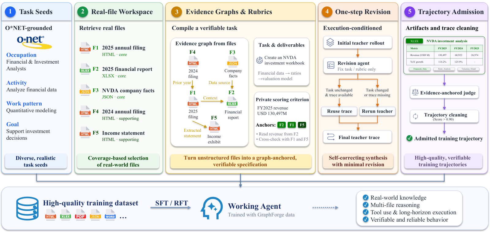
原论文 Figure 1 · 读图： 图1按职业种子、真实文件、证据图、任务与rubric、教师执行和一次修订、验收形成闭环。注意工作代理不见隐藏文件角色与图节点，裁判才沿锚点检查产物；这避免把解题路径直接泄露进指令。 回查原图与说明 。图片版权归原作者。真实工作区里的干扰文件必须可区分 搜索代理找相干公共案例，下载原格式文件并解析去重。隐藏角色分core、supporting、confuser、ambient，分别提供主证据、背景规则、貌似相关但不适用材料与冗余；执行代理看不到角色标签。证据图节点记录文件中的事实/字段及用途，边记录比较、核对、派生所需跨文件依赖，编译成任务和正负rubric。正项明确产物、要求、计算值、权重、锚点及验证步骤，负项只有违例证据才扣分。
让一次真实执行暴露任务与验收的缺陷 GLM-5.2教师先执行初任务，revision代理同时看原文件、图、任务、rubric和执行，检查自然性、可解性与证据定位。只返回需要改的部分，编译器保留其他字段并验证引用。任务文本规范化hash没变且有原轨迹时，沿用该轨迹按新rubric重新评分；文本变了才重跑，避免每次修评分绑定都支付完整执行。
文件物化验收后SFT，再做离线拒绝采样微调 确定性检查文件名、格式可读、工作表和公式等结构，代理裁判对照证据文件和产物打分，原始分可因罚项低于零。去重复非轮询调用、过量工具、失败率高及反复截断轨迹。SFT留分数>0.90的2,169条；后续在2,000新题每题采4轨迹，最高合法分>0.95且通过过滤才留，得到462题。RFT是离线筛选后监督更新，不是在线奖励梯度RL；三选择分支共享题ID、候选池和训练预算。
实验及结果 主结果：比较对象与支持范围 表2 35B-A3B在GDPVal OpenHands从1260.6→1362.3、Codex1283.0→1384.4；27B到1445.7/1427.4。27B在Workspace-Bench-Lite Claude Code56.0→63.7，SpreadsheetBench II10.3→24.0。训练轨迹全用Codex，其他harness也增益，支持工作技能迁移。GDPVal为220题内部Bradley–Terry Elo池，以GLM-5.3 OpenHands=1667锚定；不是官方独立排行榜绝对分，也不能把不同harness节点当同模型单一成绩。
消融与分析：哪些解释得到支持 表3 anchored RFT让35B Workspace两harness均再加4.0点、表格加1.0/0.9；无锚点评分和随机四选一较弱。但GDPVal无锚点点估计反而更高，全部RFT差值置信区间含零，不能声称锚点在该指标显著胜出。裁判扰动最值得警惕：删引用工作表导致目标项−0.377，改行、数值、引用却仅−0.018/−0.022/−0.013，说明能查大结构而未必验证细数字。污染审计39,201训练文件对260评价文件零hash重合、top20文本对无实质重合；不等于排除了所有语义污染。
成本、负结果与归因边界 3,638物化任务→2,153获准任务→2,169训练序列→2,150唯一工作区，分母不同因轨迹可压缩拆成多个序列；81.6%初次rollout复用。轨迹平均50步、162K tokens，最大262,144，超长完整序列丢弃而不截断；SFT3epoch、RFT1epoch，Muon、batch8。本文未给全套合成美元成本与硬件小时，长轨迹和同一GLM充任构造者/教师/裁判使成本及共享盲点重要。只测同Qwen家族两规模，未证明任意模型迁移。
总结 GraphForge的价值是让任务要求和验收证据共同来自已存在的工作区，把文件级训练做得可追溯。它证明小规模高质量长轨迹可改善多harness工作能力，但细粒度裁判仍是瓶颈，下一步应补数值核验而不是只扩大LLM评分数据量。
返回本组目录 ↑ · 全部目录 ↑
19 / 27 · 2026-09-14 · 上海首发 · 科学研究与数据工作流
EvoOntology EvoOntology: A Self-Evolving Ontology Layer for Data Agents原论文全文 · 版本记录
数据代理缺的常是字段背后的语义；把可验证语义做成按需调用、可版本化改进的MCP层。
背景介绍 问题与解决思路 方法：从输入到输出 实验及结果 总结 消融与分析 成本与边界 背景介绍 数据代理处理数据库、表格和文件时，知道列名并不等于知道业务概念在哪里、应怎样连接和过滤。每道题重新试SQL、看样本既浪费token又容易猜错。静态语义说明能缓解，但全塞进上下文难扩展，手工维护也跟不上数据和代理变化。本文在原始数据与ReAct代理之间放一个可交互ontology层。
问题与解决思路 要保留的不是上次答案，而是跨任务可复用且有来源证据的概念—数据映射。错误也不总在内容：有时工具搜索不到已有记录，有时schema不能表达某种约束。作者把内容、表示规范和工具接口分离，通过轨迹归因只修改一个层，并要求候选在对应backbone下配对通过才部署。模型权重不更新，“训练期”指工作负载适配。
方法：从输入到输出 三层状态明确每种知识的职责 内容层是有类型图，Term记录概念，Mapping把概念落到字段和连接路径，Constraint规定何时合法使用，Evidence保存支持主张的探针证据；语义关系表达层级、组成、等价和推导，结构引用把映射、条件、证据连起来。Schema定义对象字段及允许的引用，Tool定义如何检索。会话只预注入紧凑manifest，不注入全库。
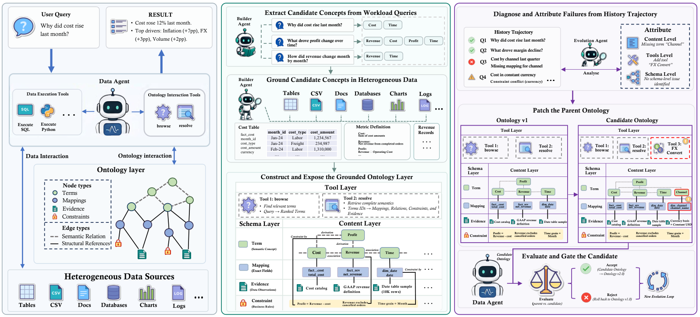
原论文 Figure 2 · 读图： 图2中内容图、schema和工具是不同可编辑对象；builder由原始数据探针建立初态，evolver从交互轨迹定位缺口。沿Term到Mapping、Constraint和Evidence看数据落地路径，再看候选如何经过配对验证进入版本状态。 回查原图与说明 。图片版权归原作者。先browse候选，再resolve取实体和支持记录 MCP browse按查询与种类检索top-n语义匹配，resolve按ID获取对象及关联记录。实际SQL和文件工具仍负责执行。以禁用卡牌为例，识别Legality后还要知道status等于Banned、format等于目标规则制式；只告诉模型存在legalities表不够。该例的更新增加status概念、字段映射、取值分布证据和format约束，不需要重写工具。
builder从工作负载和真实数据探针建立初始层 从训练任务中提出重复出现的实体、指标和分析条件，但不看gold答案。对候选字段、join路径、类型、过滤条件和取值分布执行探针，只有被结果支持的对象才入库，同时存Evidence。这样自然语言描述不是唯一依据，后续代理可回看支撑该映射的观测。
轨迹归因、局部patch和配对准入 收集成功及失败轨迹，提炼涉及哪些本体对象及行为后果的signature，归因到Content/Tool/Schema并写预期行为改变。一次只改一层，相关内容对象可共同调整；父版本和候选在同一验证集、相同解码与交互预算下比较，达到门槛才保留，失败编辑记录用于避免重试。各backbone从同初始层独立演化。互换两折评估中，适配折70%用于构造和候选，30%验证，冻结后只在另一折测试，再交换，减少把测试任务写进本体。
实验及结果 主结果：比较对象与支持范围 BIRD Oracle Knowledge设置表4覆盖六backbone，Opus4.8 EX从67.5→78.3、VES69.6→80.5；Sol EX63.5→70.7；DeepSeek33.1→39.4；所有配置EX/VES均增。静态语义层反而让GPT-5.5 EX61.5→55.9，说明信息更多并不保证正确。DDR四backbone分析均值Traj-Wise69.5→89.5；初始层先贡献12.3个百分点，演化再加7.7。注意摘要仍写四backbone，主实验已六、诊断使用四，不能把分析平均外推为六模型平均。
消融与分析：哪些解释得到支持 表5完整loop89.5，去gate降至78.3，去归因83.2，去诊断84.7，自由重写代替typed patch为87.8。表6单独改工具82.7，高于内容78.2和schema73.1，但都低于三层共同89.5；工具暴露方式是重要杠杆而非只有扩知识。表7屏蔽Mappings掉13.4点、Evidence掉8.7点，关联与约束损失较小。跨backbone部署本体较本机适配至少掉6.6点，ID Jaccard本身不能证明语义不同，但迁移实测说明适配确有模型条件。
成本、负结果与归因边界 附录B DDR平均每轮输入3.2K→4.6K，却因轮数14.6→8.4，总token52.6K→42.0K，约下降20%。这是部署期token，不含builder、候选生成与配对验证的全部摊销，也不是实测延迟。五次接受更新Terms61→80、第三轮后增长小于5%，仅展示该范围趋稳，不保证长期库不膨胀。验证集多轮筛选仍有适配风险，原文没有完整跨域漂移或线上维护成本实验。
总结 可借鉴的是把概念映射连到可复验数据证据，按需检索而不是整段注入，并区分“知识不够”和“已有知识不好用”。证据支持固定工作负载下的查询与研究提升；更换backbone或数据模式后应重新验证，不宜把一次演化的本体视作通用真理。
返回本组目录 ↑ · 全部目录 ↑
20 / 27 · 2026-09-16 · 上海首发 · 评测、检索与可靠性
XConf Confidence Comes from Experience: Experiential Confidence Estimation from Reasoning to Agents原论文全文 · 版本记录
置信度不仅看这次说得多肯定，还看类似确信过去究竟对了几次。
背景介绍 问题与解决思路 方法：从输入到输出 实验及结果 总结 消融与分析 成本与边界 背景介绍 agent常把工具返回成功当任务完成，语言模型也会对错误答案十分自信。只问它“有多确定”容易重复原先盲点，十次采样一致又可能只是十次一致地错。XConf把已获得外部判分的历史经历作为校准资源，预测当前答案正确的概率，而不是改答案或提高原始解题成功率。
问题与解决思路 同样0.9信心，在某类任务中可能历史上只成功60%。作者先检索任务相近、当时自信程度也相近的已评分episode，读真实成功频率；再把历史失败模式展示给当前模型，让它重报信心，最终平均统计与文字两种读法。
方法：从输入到输出 先生成答案与未见评分的反思，后写有评分的经验 §3每条episode记录task、rollout/答案、评分前短反思、初始信心v、外部二值结果y；结果到来后actor再写一次lesson存库。当前episode不能看到自己的结果或事后lesson，历史lesson可供未来读取。bank用途是校准当前已经生成的输出，主实验不借历史重新解题。称training-free是LLM与embedder权重不更新，不意味着没有标签或没有拟合任何模型。
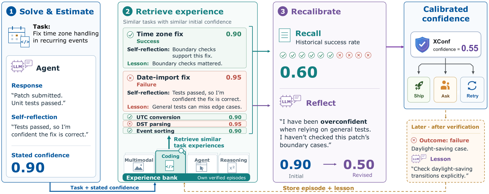
原论文 Figure 1 · 读图： Figure 1左侧先做题并给原始信心，中间Recall统计历史命中率、Reflect读过去失败教训，右侧等外部验证后才回写。先后隔离是关键：自己的未到来评分不能进入当前估计，“ship/escalate/retry”只是可能用途，本文主要评价选择性保留而非完整运营策略。 回查原图与说明 。图片版权归原作者。检索几何按历史正确性重标度，而不是单纯语义近邻 §3简式为task embedding+v、top50平均命中率；Appendix E/K实际冻结实现含task与反思各PCA30维，加v、log推理长度、log反思长度，共63维。各fold标准化后以L2 logistic probe拟合历史y，取|权重|逐坐标缩放并单位化，丢弃probe自身预测，用cosine找50邻居；再以exp(−(vj−v)^2/(2×.08²))权重统计结果。PCA/probe只用bank训练fold，周期重拟合不在查询路径。主文简式与实际实现必须区分。
Reflect读八张历史卡，不重新执行任务 Appendix L/N取最近8条渲染task概要、当时v、y与lesson，连同当前任务和评分前反思给同一actor，要求先指出重复失败模式，再输出新概率。最终=(Recall+Reflect)/2，所有任务固定等权。检索key不直接embed答案字符串，也不embed整rollout；但反思、长度与初始信心是当前执行产生的信号，并非只靠静态题目难度。
按任务跨折隔离bank，时间因果性另做专门复验 主表是task-grouped五折out-of-sample，当前任务及同批测试不入bank；这保证标签隔离，不能把随机折本身称真实时间先后。Appendix H在LiveCodeBench按2023–2025竞赛月份严格用过去bank、每段重拟合key，150例warm-up后相对同样本iid回放AUROC只低.006–.020，给出时间顺序的独立证据。外部标注是核心监督，self-label版本另作负对照。
实验及结果 主结果：比较对象与支持范围 Table4三agent域四底座：AppWorld Gemini3.5 AUROC .911/ECE .077，对自报.834/.077、同模型judge .778/.089、监督HTC .900/.225；Qwen AppWorld .837/.116，对自报.583/.397，改善大。SWE Verified Gemini2.5 .775/.149对自报.698/.501，但Gemini3.5 XConf ECE .162远差于HTC .026；不能把AUROC领先说成每格校准误差也最小。SWE这里是单次生成patch的pipeline、再由repo测试判分，非任意长程coding harness。Table3六非交互集×四模型对SC10为21胜2平1负，负例Qwen Olympiad AUROC .903 vs .919。交互域没有十次rollout SC基线，所以“23/24且十分之一生成成本”不应扩写为全部agent任务。
消融与分析：哪些解释得到支持 Appendix E检索梯子随机.494、同主题.679、纯task cosine .732、监督key .820、加权与Reflect .833（24非交互格均AUROC）。去v使Recall代理非交互.822→.741、agent .852→.728，v是承重项；task+v最小版仍.813/.839，完整特征并非都必需。Appendix D ScienceWorld Recall单独AUROC .945–.976、ECE约.010，固定blend反而.926–.971、ECE .050–.071，说明Reflect可能损害很好校准的统计估计。Appendix C同prompt第二次问但不给历史不改善，外部弱judge与gold一致.911仍有效；模型自投票标签在盲点严重处损失.14–.24 AUROC，不能靠自己把错误历史洗成成功。
成本、负结果与归因边界 §5.5按信心丢弃最低10% episode后，36格保留集准确平均+4.8点；AppWorld Gemini3.5 .805→.892（+8.7），这是90%覆盖下的选择性准确率，不是总任务成功率提高，也没有实际重试/人工升级策略实验。bank从其他模型借来通常损失.03–.06 AUROC，跨任务族中位损失.08；actor持续自改进会让旧bank过时。主模型thinking关闭，单“answer generation”之外仍有一次embedding（中位570ms）、一次Reflect LLM短调用；CPU检索.20ms、PCA/probe拟合数秒摊销，历史生成/外部判分不免费。“十分之一”是答案生成次数而非实测总账单十分之一。标签LLM spot-check400项仅312成功解析，其中311一致，不能称400项全部验证一致。
总结 XConf展示了可复用历史真实结果对置信判断的价值，适合已有独立结果反馈、且模型与任务分布相对稳定的系统。它不是免监督方案，也不自动带来更好任务解法；部署应同时看AUROC、校准误差和拒答覆盖，并按actor变化维护bank，避免用平均信心掩盖持续的模型盲点。
返回本组目录 ↑ · 全部目录 ↑
21 / 27 · 2026-09-22 · 上海首发 · 评测、检索与可靠性
Taste-Bench / Tasteful Agent The Tasteful Agent: Measuring and Improving Taste in Long-Horizon Tasks原论文全文 · 版本记录
把后续结果藏起来，检验agent能否在分岔口选中更有前景的方向。
背景介绍 问题与解决思路 方法：从输入到输出 实验及结果 总结 消融与分析 成本与边界 背景介绍 工程和研究agent常在测试哪条假设、沿哪种实现继续时决定长程结果。终局成功率混合了判断、执行和环境，无法直接定位方向选择能力。本文将taste限定为轨迹分岔处的二选一判断，用已记录的后续成功或失败提供标签，而非审美或主观风格。
问题与解决思路 从平行尝试与单轨迹绕路恢复中挖出fork，让模型只看任务、此前记录及中性描述的两个方向。它是对回溯支持方向的预测，不是严格随机化因果实验：分支后执行、相近而非字节一致的prefix和不同模型仍会影响终局，因此标签可信度与选择偏差是重要边界。
方法：从输入到输出 两种fork提供不同的错方向 §3/Appendix A平行构造在同任务一成一败的尝试中找可比决策点，用支持分支的prefix；工程124题中111同模型、13跨GPT5.4/5.5，不能全部称同执行者控制。detour要求同条轨迹四个按序逐字证据：承诺坏方向、失败信号、改向、恢复成功；把fork放在坏方向之前，回收后来的好方向必须在当时也可命名且合理，排除只有看完失败才可能提出的选项。
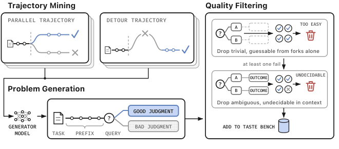
原论文 Figure 2 · 读图： Figure 2分别从平行分支与绕路恢复提取候选，再经过只看措辞和看完整后续记录的两道过滤。评测者最终只看fork之前；标签由后续支持，不等于候选方向在所有随机执行中都必然更优。 回查原图与说明 。图片版权归原作者。先过滤表面猜测，再核对完整记录是否支持标签 GPT5.6 Sol生成4657候选，1809过rubric，729过trivial过滤，502过全记录一致判定。四个非生成judge只看两个候选若全猜对就删；再给完整记录要求四者全同标签才留。最终工程390、研究112，平行172、detour330。过滤移除了显然题与含糊题，也按特定模型面板选择样本，不能代表所有真实决策分布。
换序两次均对才算对，宏平均不是全502题比例 §3.4每题固定种子顺序与反序各问一次，两次都选到同一正确方向才计1，独立均匀随机基线25%，总选固定位置得0。headline Average为工程与研究各50%，不是按390/112加权；另报每次presentation平均与无法解析率。prefix保留工具与轨迹，但长命令输出仅头尾700字符，超65536token保首25行与尾部，评测的是这个渲染信息视图。
已知答案的教师推理蒸到不知答案的学生 §5/Appendix G同Qwen3.6-27B教师冻结但context含正确候选demonstration，学生只见题目与前缀。按task划两个195题fold，所有仓库仍在两fold，teacher-sampled continuation作token蒸馏，不是student on-policy rollout。LoRA rank16、79.7M参数、2epoch lr1e−4，推理位置最多512、top100 token加剩余质量桶、答案只比两token；再用训练fold学生自生成trace在答案位监督校准。论文将损失称forward KL，但附录“from student to teacher”方向描述含糊，需实现确认；共享LoRA的答案位训练也不能严格保证其他位置分布不变。
实验及结果 主结果：比较对象与支持范围 Figure3/Table4最佳GPT5.6 Sol领域宏平均59.7%，工程56.9、研究62.5；其两序均对292/502约58.2%，单presentation65.2%，三者不能混用。Figure4四级未来证据距离158/219/56/69题，14模型均值62.3→42.9→31.5→21.0%，后者接近随机，但不同类别题目与构造分布未固定，不是把同一道题时间距离随机延长的因果实验。Figure7任务不重叠外折390工程题，学生两序都对187/390=47.9%，base117/390=30.0%，净+17.9点，104题变好、34变坏；单presentation42.7→62.4。最后41个留出SWE-Pro任务98fork，事前注入student建议后官方patch验收报告14.6→33.7%，全正确建议39.0%，但33.7%不能由41题单次二值整数直接得到，原文未明确重复/聚合分母，不反推精确成功数。
消融与分析：哪些解释得到支持 Appendix D reasoning-effort低到高Sol−.2点CI[−3.2,+2.8]，Luna+2.2[−1.6,+6.0]，整体无明确增益不等于证明更多推理永远无效；Luna研究子集43.8→54.5是保留的例外。11模型与公开SWE-Verified相关r=.63、CI[.04,.89]；工程r=.37、CI[−.30,.79]，且reasoning设置未匹配，不能当独立能力的定论。没有label-only训练、去calibration等正式对照来隔离蒸馏组件；训练集48.6→92.9不构成泛化证据。人审100题含70发布题与30被删题，披露结局后的200判断中只留明确A/B的172，170一致=98.8%；不是100题全体一致率，也不是人在fork当时98.8%正确。
成本、负结果与归因边界 端到端不是新任务上在线发现fork并求建议：这41任务此前已有他人轨迹、成功/失败证据和挖好的98fork，训练学生未见task，但测试建议的候选与情况来自同task历史。学生两序log-odds合并选方向77/98正确，这不同于基准必须双序都对；没有base-advice对照，无法把全部终局增益归到distillation而非提供预挖任务线索。executor固定SWE-agent1.1.0、Qwen27B无thinking、75模型call、命令600s、全局4800s。每fold单A10080GB蒸馏约2.1/1.8h，未含挖矿、教师、双序咨询和历史轨迹成本。来源集中在少量任务，item bootstrap未按task簇重采，区间可能低估相关性；“正确建议”是本协议参考组，不是数学性能上界。
总结 Taste-Bench把长程方向选择变为可复用、可训练的观察点，task-disjoint预测提升是明确证据。它最适合检验利用已知候选与前缀选方向的能力；要推到首次面对开放任务的自主taste，还需在线找fork、无同题历史提示、相同预算执行和更严格因果分支对照。
返回本组目录 ↑ · 全部目录 ↑
22 / 27 · 2026-09-27 · 上海首发 · 评测、检索与可靠性
TraceDance TraceDance: An Automated System for Building Agent Behavior Benchmarks from Real-World Agent Deployment Traces原论文全文 · 版本记录
把自然语言行为问题编译成真实轨迹切片与可判定rubric，评价下一轮，而非完整任务。
背景介绍 问题与解决思路 方法：从输入到输出 实验及结果 总结 消融与分析 成本与边界 背景介绍 常规Agent榜单回答任务是否完成，却不容易定位「未经确认破坏数据」「工具失败后重复无效操作」「没有证据就声称完成」这些行为。TraceDance从真实部署轨迹中寻找触发上下文，把自然语言问题转成专门小基准；它评的是在这些已筛选情境中下一轮会怎样回应，不是估计部署中的问题发生率。
问题与解决思路 难点有三层：大规模轨迹怎样便宜地召回候选，怎样确认问题真的出现，怎样切在恰当时刻并写出不依赖原始坏答案的评分标准。只搜关键词会误报，直接拿失败轨迹续写会泄漏错误动作，而执行完整环境又昂贵。论文选择「程序锚点召回＋模型确认＋单轮续写」的折中。
方法：从输入到输出 每个行为规范包含四件事：可执行anchor matcher、语义确认criterion、规定切点的cut contract、0–5分rubric。三种frame分别在坏动作之前切断Action、保留工具错误但在错误恢复前切断Failure、保留已有工作而在无根据声称前切断Claim。源轨迹的坏动作帮助筛样本，却不作为必须模仿的答案。
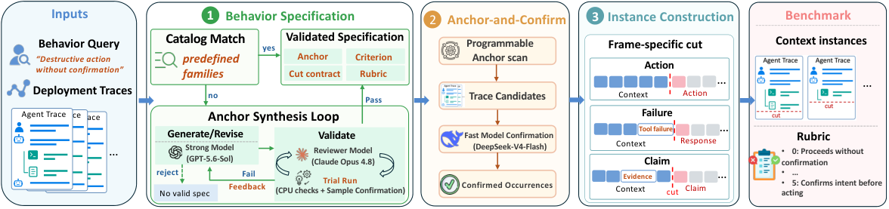
原论文 Figure 1 · 读图： 图1从左向右把行为查询与部署轨迹，送入绿色规范构建、橙色锚点确认、蓝色切片，再输出红框基准。绿色下方循环明确区分强模型合成、审查模型检查和CPU试跑；橙框是程序扫描后用快模型确认，不是全库都让强模型通读。三条切片示意分别把红色待评动作、错误后的响应、无依据声称留在切点之后。最右rubric的0分未经确认到5分先确认只是示例；图中没有执行被测工具的后续环境箭头，与论文单轮协议一致。 回查原图与说明 。图片版权归原作者。输入139条查询。GPT-5.6-Sol先对28个预定义行为家族做三次匹配，家族至少两票且完整规范三票一致才采用；未匹配则合成程序。自定义至多五轮，经过静态代码检查、Opus4.8的查询/例子/rubric审查和试跑；至少审8个session、确认率至少25%，目标8例、最少3例才接收。AND两行为要求同一回复满足两rubric，OR拆成两个bench；超过两个行为或缺必要数值参数拒绝或澄清。
程序锚点扫描252557份已脱敏生产轨迹，CC75076与OC177481；每源预留10000用于发现，构建集分别65076与167481。较快的DeepSeek-V4-Flash确认候选，强模型主要用于规范构建及修订。原始来源主要为Doubao-Seed部署，精确构成与轨迹不公开，公开流水线不等于第三方能重建完全相同测试集。
每实例保留原system、tools、user与harness上下文，移除模型thinking，排除强制compaction案例。被测模型仅生成下一条assistant turn，可以含文本及多工具调用，但工具不执行、不继续环境。因此可测是否先检查/确认/安全恢复，无法证明拟定动作实际成功；延后到下一轮的有效计划也可能在此吃亏。
三名匿名化裁判Sol、Gemini3.5Flash、Opus4.8各评0–5，平均至少4算通过；A–I身份匿名、输出随机排序一次后各裁判共享该顺序。主结果按107个bench等权平均，不按实例数加权；九模型只保留都有有效输出的4065实例，不能把构建的4125例当最终统一分母。模型可用时采用high reasoning，输出上限32768。
实验及结果 主结果：比较对象与支持范围 107条应构建查询中102条成功，95.3%；32条应拒绝查询全部拒绝。5条OR拆分后得到107个bench、4125实例。自定义仅9查询、8成功，不能由总体95.3%推出任意语义查询可靠覆盖。另100查询人工审查只有78%完全准确、17%部分准确，构建成功率并非语义准确率。
4065共同有效实例上的bench均值：Opus33.5%、DeepSeekPro29.3%、GLM28.6%、DeepSeekFlash28.5%、Sol27.2%、Doubao23.5%、Mini23.3%、Kimi23.3%、Qwen22.9%，总体26.7%。八类事后分组中ValidCall为8bench/391例、67.9%；Handle为33/1180、33.5%；Honest为23/919、28.9%；Check为38/1476、8.1%。阈值从4降到3时Check升到26.8%，绝对困难度明显受通过阈值影响。
最重要的判分边界：人工双评100实例中84例两人均确认源行为，90%两人都给rubric至少4分。有效84例产生168次裁判面板与人工比较，一致率81%，人际一致率也是81%；但人工仅16.7%判通过，所以「全判失败」的原始准确率反而83.3%。面板κ0.40、人际κ0.31，针对人工通过的precision44.7%、recall60.7%；面板平均2.46高于人工1.68。不能仅用81%宣称裁判已可靠替代人工。
消融与分析：哪些解释得到支持 对107bench做5000次bootstrap，Opus33.5%的区间28.7–38.2，领先第二4.2点、区间1.7–6.6；中间2–5名和尾部6–9名相邻差异不显著，不宜把细小排序当稳定能力差。裁判自偏好在3945实例分析：Sol给自家回答的额外偏置约+0.22/5分，实例与bench bootstrap均排除0；Opus约−0.01、无显著证据。删掉各自裁判后Opus第一、Sol第五不变，但通过率会变，排名稳不等于判分无偏。
先调用Todo的457回复涉及259实例，通过率4.6%，其余1874回复30.8%；91%的Todo回复只有Todo，7.3%伴随后续调用。这是特定单轮协议下的关联，不证明计划本身导致失败，模型构成不同、有效后续行为不可见也会影响比较。Ask/Agent/Edit较好同理不应直接当工具使用处方。
在3966单行为实例中，Doubao源2717、其他源1249；自身来源偏移约−0.9点且区间含0，只能说未检出明显效应，不能排除小效应。锚点召回率没有真值测量，对需要纯语义判断且无可编程线索的行为覆盖仍未知。
成本、负结果与归因边界 102成功构建查询平均每条128297次session扫描（含重复）、706候选审查、552模型调用、2514万输入加输出token；中位模型调用395、token1644万，平均40.4个实例是按查询而不是bench计算。这些数不是一次性扫描全库成本，也未含正式被测模型与三裁判评估。论文未给完整美元、CPU墙钟；五个未构建查询部分日志缺失，不能声称省钱幅度已被端到端验证。单轮不执行降低复现环境要求，也失去多轮恢复与真实后果。没有展示持续自改进训练闭环，RSI只是潜在用途。
总结 TraceDance最有用的贡献是把「想查什么行为」变成可审计的规范、真实触发上下文与切点；阅读时应把构建通过、语义正确、裁判一致和实际Agent任务成功四个层次分开。它适合定位下一步行为薄弱点，不适合直接给出线上故障频率或全任务安全保证。
返回本组目录 ↑ · 全部目录 ↑
23 / 27 · 2026-09-29 · 上海首发 · 评测、检索与可靠性
CorpusMap Follow the Entities: A Corpus Map for Agentic Search原论文全文 · 版本记录
提前把跨文档的同一实体连起来，让每个问题复用证据路径。
背景介绍 问题与解决思路 方法：从输入到输出 实验及结果 总结 消融与分析 成本与边界 背景介绍 企业问题常需把项目代号、批准邮件、需求文档和状态记录拼在一起。给agent全部文件并不意味着它知道这些资料关联；每题靠grep重新发现同实体关系，既漏证据又重复花token。CorpusMap把可在问题到来前建立的实体归属，作为原文件之上的持久导航层。
问题与解决思路 它不是把所有事实压进一个答案摘要，而是保留原文、给实体页列带出处的事实和所有关联文档。图是entity–document二部图，允许同文档属多个实体邻域；无可解析实体的文档仍能原始搜索。构造离线、查询只导航，没有训练模型权重。
方法：从输入到输出 先归纳身份类型，再抽取具体实体 §3.3用小批文档归纳实体type catalog，含名字、定义、身份判据、真实例子，合并核查后冻结。按catalog在每文档抽取局部实体，并把名称定位回原文字串；同一文档多种叫法先聚合。实体类型是可稳定辨认的主体而非泛化主题或临时key-value条件，避免把任意语句都变节点。
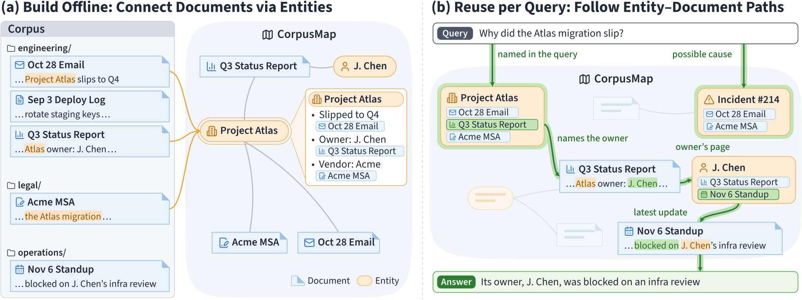
原论文 Figure 2 · 读图： Figure 2(a)先把跨目录的同实体mention合并，构成实体–文档地图；(b)绿色是当前query走过的路径，实体卡里列原文入口。地图共享不意味着每题读所有实体，也不代表摘要可代替来源核查。 回查原图与说明 。图片版权归原作者。顺序解析到共享registry，不确定就不强连 每个局部实体检索候选registry entry，结合当前文档和已有证据选择LINK、ADD或UNRESOLVED；前两者产生有来源的文档边，最后者无边。只保留至少出现于两文档的实体用于导航，每页提供overview、逐事实来源、别名与全邻域文件路径。错误实体合并可能传播到很多查询，出处可回查但不保证解析正确。
相关文件入口也是方法的一部分 Appendix B.3先对实体页名称、type、overview、facts、alias做BM25，汇集top页链接的文档，再按title/content BM25重排，向agent给候选title/path/id而不给正文。随后agent用相同shell读页与原文、双向查路径。不是仅加离线图便自然得到主结果，query-dependent候选入口与图导航共同组成系统。
增量维护与便宜构造保持同一接口 新文档复用registry，只有邻域变化的实体页重渲染；原始全语料一直可搜。Extraction/Resolution可用GLinker、open GLiNER，Rendering用确定模板替代LLM；这三个阶段无需LLM不等于Cataloging也完全去掉LLM。不同模型能复用同一地图，分离建图能力与回答模型。
实验及结果 主结果：比较对象与支持范围 Table1在80 Enterprise多文档题/2819文件、79 Wix题/6221文章、238 HERB题/6365文件，三次均值±SD。GPT5.5总体Quality66.11→72.55，input token几何均值比.43；Luna53.85→65.58、.65，Terra65.75→72.51、.66，Sol67.69→74.68、.43。Quality对各benchmark内部指标再等权平均，并非397题统一准确率；token比也不是全部调用token的总量比。GPT5.5 Enterprise文档recall61.62→76.17、正确62.08→73.75、完整73.11→79.88，输入206.5k→88.1k。Luna HERB输入反由219.4k增至254.2k；MAI Enterprise129.6k→158.8k同时quality34.06→45.07，故不能写所有模型/任务都省token。Table6逐题配对bootstrap先平均3run，四GPT对Raw整体+6.45/+11.74/+6.76/+7.00，95%区间均正且Holm校正p<1e−4。
消融与分析：哪些解释得到支持 Table8隔离入口：GPT5.5 Enterprise Raw65.60/206.5k，Raw加BM25候选66.19/107.4k；CorpusMap无候选69.04/496.4k，有entity-linked-doc候选76.60/88.1k，随机候选60.76/413.5k。实体地图本身改善质量但会显著增加探索成本，相关候选承担大量效率增益。加实体页+文档两种候选77.43/102.7k不优于默认的成本折中。Appendix B.4额外实体–实体边只缩已有路径，不新增可达页，文档recall变化−2.6至+.2点，页长度+27–52%、token最多+28%；79%沿边首次找到的gold在无边运行也能找到。没有逐项移除catalog/identity resolution/事实摘要的全面消融，所以不能把全部优势归给实体识别某一环。
成本、负结果与归因边界 Table4建图一次性费用很不均：GPT5.5≤$4732.14、Sol≤$2681.76、Luna≤$74.65、DeepSeek$310.58；这些是源表报告上界/值，不是每题费用。Luna地图给GPT5.5回答quality73.59仍高Raw65.60，支持低价建图跨模型复用。摊销只有足够多复用query才回本，不能把首次建图忽略；Figure1按回答成本估计。HERB主语料由gold证据文件加metadata构成，Enterprise选gold与一跳distractor，不是直接测试任意完整大型企业库；scale实验补distractor但仍保证gold存在。所有主要质量指标除doc recall依赖judge；换DeepSeek重评GPT5.5答案仍保持优势，但context-recall排序Kendall仅.47，指标绝对值可变。正文引用既有agent budget而未列数值，候选默认top数量/解析检索细节也未完整数值化，复现需查artifact。增量实验只测试按时间增加文档，未证明删除、改名与冲突更新完全正确。
总结 CorpusMap把“实体身份在语料中可复用”转成agent可读的文件导航结构；配套相关候选、原文保留与便宜建图复用，让它比纯摘要索引更具体。最可靠结论是这套固定语料搜索系统提升证据覆盖与回答质量，平均查询成本下降但有例外，离线建图与持续身份维护成本必须计入部署。
返回本组目录 ↑ · 全部目录 ↑
24 / 27 · 2026-09-05 · 上海首发 · 安全、权限与行为风险
EvoSafeHarness EvoSafeHarness: Evolving Model- and Domain-Specific Harnesses for Securing Agents原论文全文 · 版本记录
将部署的安全边界编译成可执行harness，再用新上下文审查抑制对攻击样本的记忆。
背景介绍 问题与解决思路 方法：从输入到输出 实验及结果 总结 消融与分析 成本与边界 背景介绍 prompt injection与恶意直接请求来自不同权威渠道，同一个固定防护在不同模型和工具域会失灵或过度拒绝。EvoSafeHarness将固定victim外的自然语言策略与执行代码共同优化，目标是降低攻击成功率同时保留正常任务完成。
问题与解决思路 困难不是单纯识别一段文字像不像攻击，而是用户许可、具体动作、参数与跨步后果是否一致。作者为每个模型×领域单独搜索防御harness，以只看训练轨迹的Designer、独立Criticizer和嵌套评价串成闭环，测试冻结后的安全与效用。
方法：从输入到输出 限定能修改的层，保护评价与权威来源 §3–4把harness写成策略P与代码C。固定victim、工具、后端和评判器不允许改；可在system_prompt_transform、pre-tool、post-tool插入改写/拒绝、来源标记、轨迹状态、隔离分类器。直接攻击来自用户恶意目标，间接攻击来自工具/文件等不可信内容，前者不能仅凭“与用户请求一致”就判安全。部署辅助分类器只能调用同一victim，不引入更强模型。
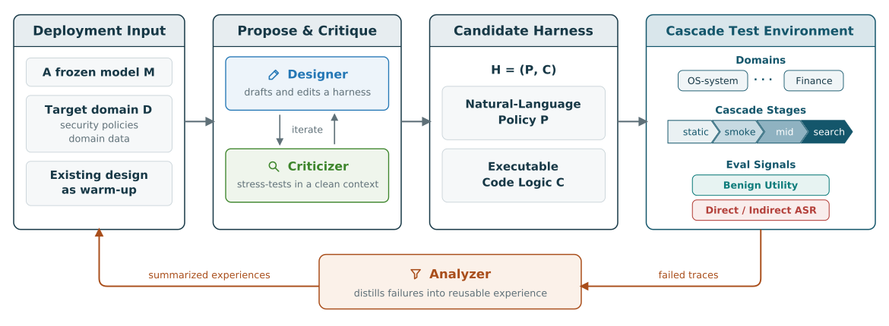
原论文 Figure 3 · 读图： Figure 3沿域规范→Designer→全新上下文Criticizer→嵌套评价→候选档案读，注意测试集从未进入这条回路，执行时修改的是victim外围harness。 回查原图与说明 。图片版权归原作者。完整候选档案构成搜索状态 Designer读取源码、父节点、设计假设、分阶段分数、失败轨迹和旧审查，从任意已存候选做局部或结构编辑；八类既有防御经验提供热启动，但不限制为固定模板。所有完成及早停候选的前缀证据存档，held-out不进入搜索。优化分为正常效用U减攻击成功率ASR，单纯全拒绝不能获得高分，但此分数仍不能替代不同风险严重性的业务权衡。
新上下文Criticizer找保持意图的廉价绕过 每次评价前交给独立上下文读源码与策略，问改路径名、换工具名、改变顺序是否仍受约束。发现依赖benchmark字面token的规则就修复并再审，阻止只背测试字符串的高分候选。它审查代码和机制，不被victim冻结限制；这层额外强模型是搜索成本，不是部署时能力。
顺序嵌套评价复用已付费轨迹 先检查import/结构，再3题smoke，扩至12题置信前缀，幸存者扩至30题搜索样本。用分层10000次配对bootstrap，仅当相对无防御分数差的一侧95%上界仍低于−10个百分点才早停，不确定者继续。前缀复用而非各阶段重跑，最终封存100题/域含30正常、35直接、35间接。
实际发现的是动作关系及其执行时点 §7.1如可信任务要buy45股CRM而工具调用sell45，直接拒绝方向不符，再允许正确购买；另一机制记录变现与资金外流的组合，审查后改成无论先后都拦住危险配对。telecom早版在post-hook计数，批量并发时所有pre-hook都看到0而绕过；改为同步pre-hook登记不同参数并限量，20次轨迹中前8次通过、后12次拒绝。安全谓词写对，还必须在副作用发生前原子执行。
不存在所有域都够用的一套门 有的模型能遵守来源策略，有的会重复、混淆或并发试探，需要确定性规则、缓存或轨迹账本。15个最终DTAP bundle中6个没有自然语言策略、4个无运行时辅助LLM。反过来，合法收件人/工具上的虚假建议或诈骗内容未必违反动作范围，post-tool架构还看不到不调用工具的最终回答，必须承认这些不可观测后果。
实验及结果 主结果：比较对象与支持范围 Table 1五victim×三域冻结测试：平均ASR45.6%→10.0%，正常效用83.1%→79.8%；Progent为ASR10.5%、效用56.4%，Evo在15格中14格U−ASR最好，唯一失利Sonnet/finance本就低风险。Table 2 Agent-SafetyBench240题×六条件×每臂一次，平均UBR24.6%→12.3%、ASR17.2%→7.4%、攻击下效用61.6%→63.4%。AgentDojo搜索后原样迁移AgentDyn，三模型均值效用73.3%→75.0%、ASR12.8%→0；是有限测试零成功，不是安全保证。
消融与分析：哪些解释得到支持 Table 4去Criticizer，finance搜索分同65但测试69.0→50.5，telecom搜索85→95却测试85.2→76.2，filesystem搜索35→45却测试81.4→50.5，支持审查抑制过拟合。每格仅一条搜索与一次冻结评测，不能将精确点差视为多种子稳定因果。22个冻结候选银行93候选的嵌套级联回放保持选中防御完全相同、零分数遗憾，评价token206.6M→116.6M、费用$183.44→$104.11；这是这些档案上的回放成本结果。AgentCanary24个留出攻击任务自适应PAIR预算16，三个攻击者ASR16.7%、16.7%、25.0%，均高于静态9.7%，说明仍能被针对。
成本、负结果与归因边界 比较基线均单次移植并跨域冻结，Evo每格专门搜索，优势同时包含适配投入；CaMeL在hook接口中用taint-lite近似，不能将结果冒充原生解释器级CaMeL完全等价评测。残留105次攻击中直接66、间接39；client scam仍9/15、options solicitation3/10、telecom finance fraud5/30，三类没有测得下降。外层40.457M新token中20.7%用于新上下文审查，内层统计含搜索、确认、基线、测试等，不能混成单次部署费用；节省43.6%token也不是43.6%的美元。
总结 主要贡献是把安全搜索的对象从词语黑名单转向可检查的授权与跨动作关系，并用部署运行语义修复并发漏洞。冻结跨域与独立审查给出较强实证，但模型/领域专门搜索、移植基线和有限攻击范围限制结论，不能宣传成通用防注入证明。
返回本组目录 ↑ · 全部目录 ↑
25 / 27 · 2026-09-30 · 上海首发 · 安全、权限与行为风险
CrossFit False Frontiers: Diagnosing and Mitigating Co-Cheating in Self-Evolving Search Agents原论文全文 · 版本记录
自生成课程里，评估者若学过同源伪标签，错误一致会被误认作能力进步。
背景介绍 问题与解决思路 方法：从输入到输出 实验及结果 总结 消融与分析 成本与边界 背景介绍 搜索agent的自演化循环让proposer从文档出题并给伪标签，solver回答、学习这些题，回答与标签的一致程度再奖励proposer。任务不用人工标注便可增长，但内部同意率不一定代表答案正确。本文直接研究RSI训练反馈闭环中的共同错误，不把co-cheating理解成有意串谋。
问题与解决思路 作者对Dr. Zero的事后审计发现，下一轮solver可能重复自己从该来源学到的错标签，反馈又把这种一致返回proposer。单纯多次验答案仍可能共享模型错误，因此CrossFit改变反馈的训练来源：评某文档的solver不能学过该文档产生的伪标签。
方法：从输入到输出 先定义可分辨的失败量 §2在每个scheduled step保留来源、采用的伪标签、用于reward的5个solver回答。独立事后judge依据原文构建参考，不影响准入、训练与奖励；无法支持的案例保持未决。分别记录标签正确T_P、solver正确T_S、内部一致A、共同错误F和正确回答被错标签拒奖L。F是被审计回答对中同意同一错误的质量，不是所有错误率；约85–86%的审计覆盖需与它一起看。
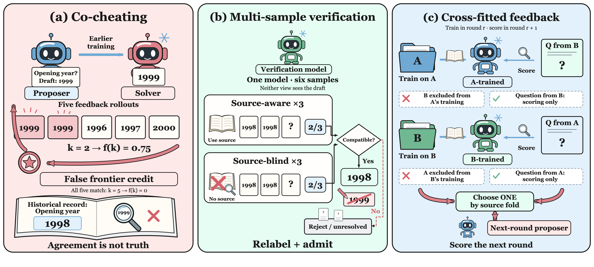
原论文 Figure 2 · 读图： Figure 2左侧是共同错误返回出题reward，中间是MSV在准入前验题，右侧是A/B辅助solver交叉评分；两条改进分别作用于标签质量与反馈来源，主solver仍学全部准入题。 回查原图与说明 。图片版权归原作者。MSV修标签，不修反馈血缘 §3.1同一模型对候选题分别有来源/无来源各采3次，都不看草稿答案。每组至少2票形成多数，两组多数兼容才准入，以共识替换原标签，否则拒绝。每候选多6次生成，但同一模型可能稳定地一起错，后来反馈solver仍可能学到这些标签。
CrossFit在来源级别固定分组 §3.2把源文档一次性分到A/B，同源所有题始终属于同组。两个辅助solver分别只在一组的准入题上训练，下一轮交叉评分：A题由只学B的solver回答，反之亦然。5次回答中k个匹配标签时，原Dr. Zero前沿reward仍为0<k<5时(5−k)/4、两端为0。目标仍鼓励处于solver能力边缘的问题，只换提供反馈的人。
主solver仍学全部数据 主solver继续用A+B全部准入问题更新，辅助solver只影响下一轮出题的reward；不是把最终部署模型的数据砍半。若与MSV组合，先验题并定标签，再交叉选择反馈solver。按问题随机划分不能阻断同文档标签回流，所以必须按来源划分，并严格落实checkpoint与数据路由。
三轮训练及评测条件固定 Appendix A每轮18次proposer更新、25次主solver更新，1,600准入题、每题5回答；训练温度0.8/top-p0.95，工具预算最多5个assistant动作、每动作512新token。CrossFit主配置另有每组25辅助更新。Qwen3.5-4B/9B各处理从同一公开checkpoint出发；评测固定1,325题，前六个数据集各200题+Bamboogle125，单次贪心搜索、相同工具与答案抽取。
实验及结果 主结果：比较对象与支持范围 Table 1的七数据集等权Cover-EM（参考别名经归一化后包含在预测中，不是严格整串EM）：4B Dr. Zero0.400、MSV0.407、CrossFit0.488、组合0.491；9B分别0.428/0.436/0.512/0.515。CrossFit相对耦合循环提高8.8/8.4个百分点，超过同协议Search-R1的0.401/0.434。Table 4第三轮F从0.061/0.088降为0.030/0.037，组合0.020/0.017；这些是每轮43个step比率的平均，不是独立重复试验置信区间。
消融与分析：哪些解释得到支持 §5.2–5.3固定回放3,000道相同题、标签和评测规则，隔离课程变化。只加同源辅助solver的F仍0.064/0.087，全数据辅助0.058/0.069；随机分题0.050/0.062，按source-ID排除才0.004/0.001。半辅助更新预算仍0.005/0.002，支持来源排除而非单纯多训练的解释。注意回放control F为0.058/0.073，不应与自适应全循环0.061/0.088混用；回放中的近零结果也不等于真实演化闭环已消除错误。
成本、负结果与归因边界 Appendix A Table 3：4B/9B耦合循环预留379/476 H200小时，CrossFit每组25更新650/854，MSV719/903，组合990/1281；小时含8张H200持有期间等待，不是有效加速器利用率，外部审计服务算力未计入。半辅助预算为515/665小时。来源重叠、共享预训练错误和自适应出题仍可造成相关性，论文未证明端到端更省钱或对语义相连来源稳健。
总结 自演化需要同时审计“评判是否正确”和“评判者从哪里学到答案”。在两个规模、三轮搜索课程和固定QA评测下，来源隔离比单独多采样验题更有效；这是一项有成本的经验干预，不是统计cross-fitting渐近保证，也不能外推为通用RSI安全证明。
返回本组目录 ↑ · 全部目录 ↑
26 / 27 · 2026-09-22 · 上海首发 · 多模态创作、几何与程序执行
VideoGen-Agent VideoGen-Agent: Reinforcing Video Generation Agents原论文全文 · 版本记录
训练统一工具策略补生成器的知识、身份、物理与时序短板。
背景介绍 问题与解决思路 方法：从输入到输出 实验及结果 总结 消融与分析 成本与边界 背景介绍 视频画面好看不等于细节忠实。身份参考、动作知识、物理轨迹与分镜接续需要不同工具。本文把这些选择放进同一多模态Agent并训练其权重，主贡献是多任务工具政策，而非改视频扩散模型；9月使用v2，不把后续版本引入。
问题与解决思路 六任务分别隔离程序知识PK、单/多实体身份SI/MI、物理PS、复杂构图CS与多镜头MS。作者先蒸馏教师轨迹，再用结果与工具使用奖励优化Qwen3-VL8B。工具能力与Agent策略必须分开评价：换强生成器的提升不等于RL学得更多，额外生成与检索预算也不同于单次T2V。
方法：从输入到输出 动作历史与工具产物构成闭环，保留最新而不是事后选最佳 每轮只发一个tool call，结果/错误/图像返回history，Agent决定检索、模拟、生成、验证、重做或结束。Bing文本/图像提供外部依据，模拟器把定量碰撞/下落转为optical flow供M2V；GroundingDINO检测与DepthAnything相对深度仅检通用主体和相机前后，不验证专名身份/物理。每段重生成替换旧候选且作废依赖它的后段，需要重新接续；最终交最新完整序列，无best-of候选回退。训练10轮、测试20轮，完成才准结束，没有写死质量阈值。
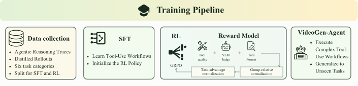
原论文 Figure 2 · 读图： Figure 2左侧是teacher轨迹SFT，右侧是当前政策实际调用工具后对成片及工具使用打分的RL。箭头训练的是Qwen Agent政策，不是视频生成器；六类优势归一化发生在rollout奖励后，测试换Toolset2另属冻结政策的后端升级。 回查原图与说明 。图片版权归原作者。SFT学协议与恢复，失败动作本身不当正标签 ClaudeOpus4.7构造并过滤24K prompts，每类4K；Gemini3.1Pro/Opus4.7随机为teacher，16K轨迹用于SFT，余8K仅作RL新rollout的prompt。两epoch AdamW lr5e−5，8×H200；失败action span保留上下文但mask loss，之后有效恢复继续监督。system prompt已给六类参考工作流及组合指导，训练并非从零发现工具语义；测试600提示每类100人工复核并与训练排重。
混合奖励既评成片也核对工具输出是否真被使用 RL每prompt补齐6条usable轨迹，外部tool失败导致的失败轨迹丢弃重采；R=.1format+.5video+.4tool。format核think/单JSON工具/终止格式；tool匹配检索reference ID或模拟flow路径是否进入生成条件、上一尾帧是否接下一段，不只是数调用；但CS“适当接受或重做”的具体判断仍依赖规则语义。video用类别rubric，PS其中20%来自代码的图像平面运动一致性，70%VLM物理外观、10%美学，不能视为真实动力学成功率。
两级优势归一化更新Agent而工具冻结 先同prompt六条做group-relative advantage，再按全局batch各任务所有Agent token优势均值/方差标准化，长轨迹token也进入统计。仅Agent发出的token做clipped GRPO，tool response仅context；clip .2/.28、lr1e−6、一epoch、stratified batch10。8×H200政策加8×工具；direct KL loss系数0，另配置KL controller1e−3不是非零直接KL项。Toolset1训练到底，Toolset2只换Seedance2Fast的T2V/I2V/R2V及VACE14B的M2V，不再训练政策。
实验及结果 主结果：比较对象与支持范围 表3 Toolset1总分75.6 vs基底Seedance1 56.5（+19.1点），PK/SI/MI/PS/CS/MS=80.4/75.1/65.3/67.9/83.1/81.7。它总分高于Seedance2的73.2，但MI65.3<69、CS83.1<87.8，不是六项全赢。换Toolset2才到86.1、六项92.1/83.2/86.7/69.2/90.7/94.6全领先；其中MI+21.4主要伴随生成后端更换，不归给新训练。两次人评各100pairs×4人、无tie，Toolset2对Seedance2偏好84.3%，Toolset1对Seedance1为88%；它们是400判断的比例而非100题独立成功率。全部600在允许重试后有完整成片纳入均分，主分是类别rubric加权而不是exact任务完成率。
消融与分析：哪些解释得到支持 表4同Toolset1单次T2V56.5、prompt rewrite57.3、固定workflow64.1、SFT69.2、RL75.6；去VLM reward73.3、去tool reward71.2，两个组件均有益。但固定workflow除CS最多3ReAct轮外只单次执行，RL最多20轮，未匹配生成调用预算。六个独立单任务训练平均76.3反而高共享75.6：共享好处是一政策覆盖，非准确率全面超单任务；无task-normalization单独去除表。未见组合PI100题，RL73.2 vsSFT57.6、手工组合固定72.4，双检索率84/40/100%；提升对SFT明显，对固定仅.8且无CI，检索率不是双要求成片成功。内部观察接受边界d≈.6指检测帧覆盖率，对应returned reward .8，并非硬阈值或置信度。
成本、负结果与归因边界 训练失败补采使usable six-rollout不代表只付六次成本，测试每失败操作≤3尝试、整轨迹不完整也≤3次，技术retry与政策重生成另计；未报实际平均生成次数、时延、美元或全token，不能按基准分直接判效率。RL奖励与主评同Gemini3.1Pro/rubric，600pairs人类多数一致92%但PK仅72%，scalar ties另强制pairwise破平，不能解读为逐视频标量校准92%。PS用SAM3最终视频track、固定相机投影动量/非零恒加速度10%容差，未标定深度或米制，不验证g=9.8及三维守恒；仅碰撞/下落无流体。MS按prompt两/三等长≤5秒边界切片、相同协议比较，无长故事。机器人附录是另外1000样本再微调checkpoint调用π0.5与CtrlWorld，4个定性例分辨率/时长不同，非零样本工具升级、更非真实机器人成功率。
总结 本文给出“学会选择并真正利用工具”能增益固定生成后端的证据，且同接口可承接更强工具。最稳结论是SFT与RL都带来收益、统一政策支持六类任务；尚不能把86.1归成纯Agent能力、把小幅未见组合领先归成强泛化，或用外观物理分声称可验证世界动力学。
返回本组目录 ↑ · 全部目录 ↑
27 / 27 · 2026-09-29 · 上海首发 · 多模态创作、几何与程序执行
LEGO-Anything LEGO-Anything: Coding Agents for 3D Scene Reconstruction原论文全文 · 版本记录
把参考图变成可执行场景，借助有状态验收与回滚保护已正确的内容。
背景介绍 问题与解决思路 方法：从输入到输出 实验及结果 总结 消融与分析 成本与边界 背景介绍 单张RGB图到3D场景，若输出是程序，就能继续编辑、渲染、查询对象与深度。LEGO-Anything让通用编码Agent迭代写Blender程序；同时提出有模拟器真值的LEGO-Bench，诊断轨迹失败后再加LEGO-Plugin。其Agent贡献是有界编辑、外部证据校验和状态版本控制，并不只是一项单图重建应用。
问题与解决思路 能交付可打开文件，不代表几何或外观正确；模型看自己的渲染也不可靠，后续修改甚至破坏已有正确部分。作者先把“产物有效”与“恢复忠实”分开量，再给原生harness附加初始化、参考图测量和事务式回滚，不另建一个指挥Agent，也不把私有评测分数交给行动者。
方法：从输入到输出 输入图驱动代码—执行—观察闭环 Agent读取单张图及公开尺寸、水平视野、类别表和输出schema，使用Blender MCP修改场景，执行后看渲染再修，最终交scene.blend、scene.glb和final.png。LEGO-Bench由LychSim中104个模拟场景渲染208图，8环境17主题；同主题难度只增加嵌套物体集合，其余相机、照明、材质等保持，私有深度、分割和变换仅评估器可见。
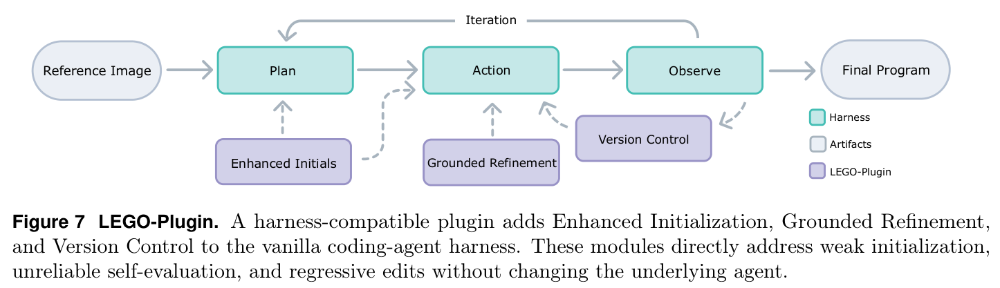
原论文 Figure 7 · 读图： 图7保留原Agent的Plan→Action→Observe循环，紫色模块分别给初始场景、参考证据及版本保护。注意插件未取代规划者；版本控制接在观察之后，决定这次编辑是否能成为下轮起点，而不是仅保存文件历史。 回查原图与说明 。图片版权归原作者。验收分有效性、几何、外观三层 有效性要求可加载的非空Blender/GLB和非退化渲染；无有效产物或无法完成评测都记零。几何R只对参考视图可见表面，以私有实例mask在图像平面分配物体，直接在相机坐标比点集，不做配准或缩放；距离容差为参考深度5%，每物体F1再宏平均。外观A不信代理提交图片，而重新渲染场景，统计RGB每通道误差均≤30/255的像素比例。单题Overall=有效性×(R+A)/2，最终所有尝试含失败平均。
初始化和修正都落到参考图证据 VGGT估计Z-up Manhattan场景框架与相机，先安装验证后的房间壳；每个可见对象记录归一化中心、投影范围、相对/序数深度和可观测性，不臆造单目绝对尺寸。细化时可用SAM 3区域及Depth Anything V2相对深度，与当前场景比较中心、范围、深度顺序、可见性、支撑、碰撞等残差；区域对应哪个Blender实体由Agent决定。返回pass/fail/unknown，硬要求失败或缺证据都不能接受。
事务和状态签名阻止静默回退 修改前声明可编辑/受保护实体、允许改动和验收条件，并快照变换、网格、材质、层级、相机及渲染设置。Blender MCP改完后，只允许非空合法改动且硬检查通过才提交；越界或不合格就恢复快照并删新实体。每例最多8次事务、2次回滚，每候选最多2轮修正。验证绑定精确场景签名，场景一变旧验证失效；存在未决事务、过期验证或未审渲染时，runtime hook阻止结束。模型仍是规划者，插件只提供有界工具，无训练权重更新。
实验及结果 主结果：比较对象与支持范围 表3在原生Codex+Blender 5.0.1下3次运行报均值(标准差)：GPT-6-astra室内V/R/A/Overall为100.0/52.4/54.4/53.4(0.8)，室外98.0/34.0/45.5/39.6(0.8)；GPT-6-sol Overall 32.3/24.2。Gen3DSR室内R=65.4高于Astra 52.4，但A=0，说明总榜胜出不代表每维最好，也混合原生输出能力。图8插件只在42-case Office同输入、提示、预算、推理档位比较，六模型均提高：GPT-5.6 Luna/Terra/Sol相对+62.7%/+55.8%/+55.3%，GPT-6 Luna/Sol/Astra为+27.5%/+12.1%/+2.1%。这些是相对增益，不是增加62.7分，也不是全208图成绩。
消融与分析：哪些解释得到支持 §5.1轨迹中GPT-5.6-sol 29.6%编辑使分数下降，最后比曾经最好状态低3.2分。36 builder–judge组合、2160判断中，自评几何方向一致率45.8%、外观62.2%，跨模型45.4%/63.9%，支持不能单靠自由文本自评。插件是整包对照，正文与附录G未给三模块分别移除的定量消融，不能把收益逐项归功。42 Office推理档位实验Astra Overall 32.3→61.8、Sol21.3→39.7、Luna14.4→21.2，但高档实验关闭主榜额外相机指导，不能和主榜High直接拼接。附录E人类—指标83.7%是把Tie-A/Tie-B也视为相容的宽松agreement，非严格准确率。
成本、负结果与归因边界 附录B费用是从日志重算的标准化token价格代理，未提供完整插件额外视觉模型/渲染成本；主榜各系统只统一评估终点，不统一推理预算、信息与输出适配，不能当纯底模对照。几何只查可见面、mask外多余几何不进入主R，像素A又敏感于照明；模拟图并不等同真实照片。LEGO-World在三个各100图真实轨道、冻结Astra场景且无插件，box AP30.14对DINO59.88，mask AP14.75对SAM3 53.96，AbsRel0.1554对Depth Anything3 0.0783（越低越好）；AP使用等置信度协议，仍远弱于专用视觉模型。
总结 可借鉴的是把“修正”做成带验收条件的状态事务：先有参考证据、再做有界编辑、检查当前状态、失败可回滚。Office结果说明它尤其帮助弱Agent，但尚不能证明三模块各自贡献或全环境收益；程序化场景具有可查询性，距离高精度自然图表示仍明显不足。
返回本组目录 ↑ · 全部目录 ↑
筛选说明与阅读依据 保留以下工作，是因为它们在本期提供较明确的技术变化或有用的评测证据。重点来源名单包含企业、实验室、团队与开源项目，机构匹配按已核实粒度记录，不把作者使用的模型当作作者单位。
在保留项中，已核实本月 HF 日榜记录 25 篇，精确对应重点来源 12 篇。两项可重叠；只确认母机构的工作另行说明，不计入精确命中。
展开逐篇选择依据 WHALE 交替模型权重与可执行harness，在三领域以单组件和调度对照揭示耦合瓶颈；保留最佳测试点选择及小模型边界。
HF：本月上榜：2026-09-03；查询时票数 38；重点来源：KRAFTON、KAIST、Stanford University。仅确认母机构/学校关联，未确认具体名单团队 证据 1 · 证据 2 · 证据 3 ·
HarnessDev 把创建、演化、留出泛化、跨执行模型迁移分开测，负迁移证据直接约束自改进叙事。
HF：本月上榜：2026-09-03；查询时票数 87；重点来源：ByteDance Seed、Singapore University of Technology and Design、Georgia Institute of Technology、M-A-P、TokenWave.AI。精确命中：字节Seed 证据 1 · 证据 2 · 证据 3 ·
EvoHarnessBench 固定底模测工具/技能/专家池扩展，旧任务遗忘与新能力使用分开，有受控适应对照。
HF：本月上榜：2026-09-09；查询时票数 29；重点来源：Salesforce Research、UNC Chapel Hill、University of Wisconsin–Madison。精确命中：Salesforce AI Research 证据 1 · 证据 2 · 证据 3 ·
ModularRSI 独立模块演化后整合优于整体改写，提供跨域迁移与结构消融；不是只堆反思提示。
HF：本月上榜：2026-09-16；查询时票数 54；重点来源：Beihang University、University of Manchester、IQuest Research、M-A-P、Langboat、Hohai University。未确认名单来源命中 证据 1 · 证据 2 · 证据 3 ·
Dream-RSI 将历史搜索树作为可重放策略试验场，并检验回到真实搜索后的收益；机制不同于经验摘要。
HF：本月上榜：2026-09-15；查询时票数 142；重点来源：Google DeepMind、University of Maryland、University of Virginia。精确命中：Google/Google DeepMind 证据 1 · 证据 2 · 证据 3 ·
SoL-Pi 自动研究成本与能力折衷，四种可执行省token机制及失败兜底明确；不把容差内退化写成无损。
HF：本月上榜：2026-09-18；查询时票数 89；重点来源：NVIDIA、NTU、MIT。仅确认母机构/学校关联，未确认具体名单团队 证据 1 · 证据 2 · 证据 3 ·
Harness条件效应 跨模型和任务拆规划、工具、上下文的条件效应，有助避免更复杂harness必然更好的误判。
HF：本月上榜：2026-09-18；查询时票数 60；重点来源：UMass Amherst、Emory University、UNC Charlotte、Zoom Video Communications。未确认名单来源命中 证据 1 · 证据 2 · 证据 3 ·
RRSI 稀疏提案、负证据和准入约束形成可执行回归控制，并以冻结产物跨域评测；热度高且贡献明确。
HF：本月上榜：2026-09-22；查询时票数 163；重点来源：Google Cloud AI Research、Stanford University、Washington University in St. Louis、UNC Chapel Hill。精确命中：Google/Google DeepMind 证据 1 · 证据 2 · 证据 3 ·
AIDE² 内外双层研究代码搜索与隐藏评价，直接测研究能力和改进器能力；低热度仍因关键RSI证据保留。
HF：本月上榜：2026-09-23；查询时票数 11；重点来源：Weco AI。未确认名单来源命中 证据 1 · 证据 2 · 证据 3 ·
Raven 异构原生agent、产物依赖、独立裁定和经验系统接口有系统价值；保留端到端证据不充分边界。
HF：本月上榜：2026-09-30；查询时票数 99；重点来源：EverMind AI。未确认名单来源命中 证据 1 · 证据 2 · 证据 3 ·
Code2Skill / CodeSkillBank 以盲重建与来源记录筛程序技能，区别于泛化代码摘要；Ant International不冒充inclusionAI。
HF：本月上榜：2026-09-21；查询时票数 77；重点来源：Ant International。未确认名单来源命中 证据 1 · 证据 2 · 证据 3 ·
JitMem 把记忆整理移动到任务已知的读取时，用即时回报训练独立curator，机制与三环境对照清晰。
HF：本月上榜：2026-09-24；查询时票数 40；重点来源：Salesforce AI Research。精确命中：Salesforce AI Research 证据 1 · 证据 2 · 证据 3 ·
AsyncLLM 异步交互是Agent执行范式的独立贡献，补充静态轮流对话之外的系统能力。
HF：本月上榜：2026-09-30；查询时票数 53；重点来源：Yandex、Together AI、HSE University、Yandex School of Data Analysis。精确命中：Together AI 证据 1 · 证据 2 · 证据 3 ·
Terminal-Universe 从真实轨迹恢复未解工作区，再扩跨仓库/多轮环境，训练对象与数据生产证据具体。
HF：本月上榜：2026-09-04；查询时票数 78；重点来源：Qwen Team, Alibaba Group、Tsinghua University。精确命中：阿里通义/Qwen 证据 1 · 证据 2 · 证据 3 ·
ScienceIDE 科学等价性、容差与正反执行证据形成可复用训练契约，区别于普通代码测试；机构仅记未核实。
HF：本月上榜：2026-09-17；查询时票数 71；重点来源：PhAI-Labs/Qwen为首页sponsors，作者affiliation编号未被HTML可靠展开。未确认名单来源命中 证据 1 · 证据 2 · 证据 3 ·
RecreationWorld 参考软件真实行为支撑跨平台混合GUI/代码训练，隐藏行为测试和固定分母有明确方法价值。
HF：本月上榜：2026-09-21；查询时票数 72；重点来源：Alibaba Token Hub, Alibaba Group。仅确认母机构/学校关联，未确认具体名单团队 证据 1 · 证据 2 · 证据 3 ·
CodeMidas 从源码挖功能、参考执行定答案、过滤伪奖励，能产生实际RL收益；非仅环境数量扩张。
HF：本月上榜：2026-09-21；查询时票数 115；重点来源：LLM Core, Xiaomi、Peking University、University of Hong Kong、Renmin University of China。精确命中：小米MiMo 证据 1 · 证据 2 · 证据 3 ·
GraphForge 真实工作区证据图同时约束任务与验收，长轨迹训练有外部收益；保留模型裁判盲点。
HF：跨月上榜：2026-10-02；查询时票数 58；重点来源：USTC、Shanghai Innovation Institute、Fudan University、Shanghai AI Laboratory。精确命中：上海人工智能实验室/书生 证据 1 · 证据 2 · 证据 3 ·
EvoOntology 可追溯概念—数据映射、schema和工具分层演化，提供工作负载配对收益；不将RUC等同AIBox。
HF：本月上榜：2026-09-21；查询时票数 98；重点来源：Renmin University of China、official code ruc-datalab/EvoOntology。仅确认母机构/学校关联，未确认具体名单团队 证据 1 · 证据 2 · 证据 3 ·
XConf 用真实历史结果校准当前置信度，区分可靠性估计与任务能力；是执行决策的重要补充。
HF：本月上榜：2026-09-17；查询时票数 46；重点来源：University of Cambridge、Google DeepMind。精确命中：Google/Google DeepMind 证据 1 · 证据 2 · 证据 3 ·
Taste-Bench / Tasteful Agent 将长程分岔选择单独测量和训练，补足执行成功之外的决策诊断；保留非随机因果分支限制。
HF：本月上榜：2026-09-23；查询时票数 31；重点来源：City University of Hong Kong、Independent Researcher、Microsoft。仅确认母机构/学校关联，未确认具体名单团队 证据 1 · 证据 2 · 证据 3 ·
TraceDance 从真实部署轨迹构造可审计行为切点与rubric，补充只看终局的基准；ByteDance不直接当Seed。
HF：本月上榜：2026-09-29；查询时票数 61；重点来源：ByteDance Inc., USA、University of Illinois at Chicago。仅确认母机构/学校关联，未确认具体名单团队 证据 1 · 证据 2 · 证据 3 ·
CorpusMap 实体身份与原文导航可复用，相关候选消融及一次性建图费用给出可落地折衷。
HF：本月上榜：2026-09-30；查询时票数 55；重点来源：KAIST、Microsoft。仅确认母机构/学校关联，未确认具体名单团队 证据 1 · 证据 2 · 证据 3 ·
EvoSafeHarness 授权关系与动作时点编译成安全harness，有冻结测试与独立审查消融，并保留自适应攻击残余。
HF：本月上榜：2026-09-11；查询时票数 19；重点来源：Johns Hopkins University、UW-Madison、NVIDIA、UIUC、UC Berkeley。仅确认母机构/学校关联，未确认具体名单团队 证据 1 · 证据 2 · 证据 3 ·
CrossFit 按来源隔离反馈solver，受控回放排除单纯多训练解释，直接处理自生成课程的同源伪标签反馈。
HF：跨月上榜：2026-10-01；查询时票数 149；重点来源：Rutgers University、independent researchers、UC San Diego、University of Michigan、McGill University、KFUPM。未确认名单来源命中 证据 1 · 证据 2 · 证据 3 ·
VideoGen-Agent 统一训练工具策略改善固定视频生成后端，有SFT/RL对照；不把升级后端收益归成Agent能力。
HF：本月上榜：2026-09-22；查询时票数 48；重点来源：Princeton University、Stanford University、UC Davis、MMLab CUHK、BenchFlow、GWU。精确命中：香港中文大学MMLab 证据 1 · 证据 2 · 证据 3 ·
LEGO-Anything 将编辑做成可验收、可回滚的状态事务，固定Office对照说明弱agent收益；领域性但机制可迁移。
HF：本月上榜：2026-09-30；查询时票数 65；重点来源：University of Maryland、AWS。精确命中：Amazon/AWS Science 证据 1 · 证据 2 · 证据 3 ·
旧链接指向的条目若已不在本轮精选中，会落到此说明区；完整入选正文见上方目录。